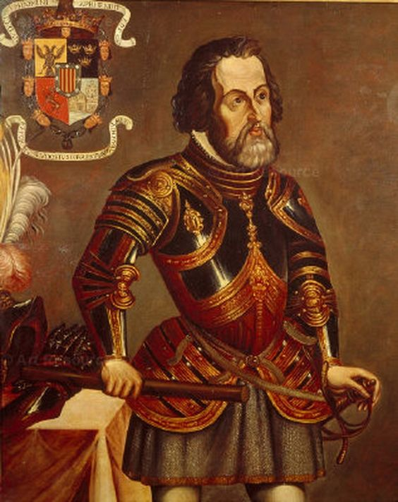

| アステカ物語 第3章 | |
| 作宮邦夫 | |
| (2018) | |

アステカ物語 第３章
我々の前まで来ると輿は地上に降ろされた。太っちょ領主は家来にたすけられてよろよろと立ちあがると、挨拶もそこそこに興奮しきった声でコルテスに言った。
「メシカの徴税人がやってきますぞ。わしは、この町のカシケと共にもう一度貴殿に手だすけを頼もうとやってまいったのじゃが、何と、そのわしを追うようにやつらがあとからやってくるのじゃ」
そう言うと、彼は太った体をがたがたふるわせ、涙を流した。よく泣く領主様である。町のカシケも真っ青な顔をして家来に何ごとかを命じると、自分の館に駆け込んでいった。
カシケの館は徴税人の歓迎のために花で飾られ、召使たちは大あわてでご馳走と飲み物を用意した。準備が終わると、カシケを先頭に一同館の前にいならんだ。
徴税人がやってきた。五人いる。コルテス一行を奴隷の群れでも見やるように見さげた様子で通ってゆく。その髪は高くゆいあげられ、赤いリボンでたばねられていた。あでやかな色彩のマントをはおり、これまた見事な刺繍のほどこされた腰布をつけ、握りの太い杖を持ち、もう片方の手にはバラの花をきざに持って、その香りをかぎながら歩いた。とりまきの家来が大きな羽根うちわをあおいで五人に風を送り、まといつく蝿を追った。
徴税人たちはカシケの館に招じいれられ、豪華な食事の供応を受けた。それを存分に堪能すると、カシケとセンポアラの領主を呼びつけた。太って大きな体を大儀そうに館に運ぶ領主の姿はあわれそのものだった。
我々は路上にほうっておかれたまま、所在なく事の成りゆきを見まもっていた。小一時間もしたころ、カシケと太っちょ領主が館からよろめくように出てきて、我々のところへやってきた。
太っちょ領主が言った。
「あの徴税人どもは大いに怒ってこう言ったのじゃ。おまえたちはモクテスマ王のご威光をおそれることもなく、好きかってなことをしておるようだの。王の許しもなく白い人間を町にいれ、接待して金をさしだすなどもってのほかではないか。そんな余分な金があるのならなぜ王に納めんのだ、とな」
こんどはカシケが青ざめた顔で言った。
「このような不祥事の代償に、生贄の若者を男女二十人ずつさしだせとも言っております」
コルテスは考え考え、しかし毅然とした態度はくずさずにこう言った。
「おぬしらは、モクテスマにはひどい目にあっておるではないか。おぬしらはいつまでそれを許しておくのか。領主殿は先日、わたしに対してモクテスマの横暴を涙ながらに訴え、この窮状から一刻も早くぬけだせるよう手だすけが願いたいと申しでたばかりではないか。よいか、肚をくくるのだ。怖れからは何も新しいものは生まれてこない。さあ、勇をふるうのだ。そして、さんざん飲み食いして、いまごろは惰眠をむさぼっておるにちがいないあの徴税人どもをひっとらえて、牢にぶち込んでしまうのだ」
カシケと太っちょ領主はふるえあがって言った。
「そ、そんなことをしたらモクテスマにどんな目にあうかしれません」
「だからな、あとのことはこのコルテスにまかせておくのだ。決してわるいようにはせん。それともなにか、金銀財宝どころか、若い男や女も国中からいなくなってもいいというのか」
こうまで言われて、カシケと太っちょ領主はやっと意を決し、家来に命じて徴税人五人をとり押さえさせた。徴税人たちは牢にいれられ、首に輪をかけられて棒につながれた。
ことがすんでから、コルテスはカシケと太っちょ領主にこう申しわたした。
「よいか、今後はモクテスマの命令にはいっさい従わぬように。徴税人が来ても税を納めてはならん。おぬしらはこの旨をすべてのトトナカの町々に申しつたえるように」
伝令がとび、センポアラをはじめとする三十余のトトナカの町々にこの徴税人の一件が知れわたった。トトナカ人は大喜びし、まもなく「このようなことがしおおせるのは神をおいてほかにない、彼らは神にちがいない」という噂までたった。
コルテスはほくそ笑んでいたにちがいない。そして彼は底しれぬ狡知の罠をトトナカ人そしてモクテスマにしかけたのである。
彼は、町が寝しずまった深夜、五人の徴税人のうちの二人をひそかに自分の宿舎に連れてこさせた。コルテスは何くわぬ顔で二人に言った。
「どうしてあなた方は捕らえられたのです。あなた方はどこから来たのです」
怪訝な顔をしていた二人は、コルテスが何も知らないらしいとわかると、それまでのしおらしい態度は急変させ、居丈高の調子をとり戻して、自分たちの素性をほこらしげに告げた。そして憤懣やるかたなしといった口調で、これまでのいきさつをコルテスにぶちまけた。聞きおえるとコルテスは言った。
「わたしは何も知らなかったのだ。こんなことになって本当に災難でござったの。おぬしらの身の安全はわたしが保障しよう。さあ、食事でもしてゆっくりくつがれるがよい」
コルテスが食事を持ってこさせると、二人の徴税人はむさぼるように食べはじめた。弱者に供応を強いるこの者たちも、本国ではつましい暮らしをしているのであろう。
食事がすむとコルテスは言った。
「おぬしらはただいまから自由の身だ。国へ帰ったらモクテスマ殿につたえてくれ。我々は殿のお味方であり、かけがいのない真の友人であるとな。残った三人も自由にして国へ帰れるよう力をつくすので、どうか安心してほしい」
こうして二人の徴税人は解放された。彼らが捕まらぬよう、コルテスは部下に命じて安全なところまでひそかに護送させた。
捕虜が二人脱獄したことは、翌日、カシケと太っちょ領主の知るところとなった。彼らは残りの三人をいますぐにでも生贄にしなければと、その準備を家来に命じた。コルテスは別に反対するでもなくこう言った。
「そんなことをするよりも、三人の身柄をこのコルテスにあずけたほうが、のちのちの面倒にならずにすむのではないかな」
面倒という言葉にからきし弱い太っちょ領主とカシケは、コルテスのこの提案にやすやすとのってしまった。こうして三人の捕虜はコルテスの宿舎に連れていかれた。コルテスは彼らの首輪をはずして自由にしてやり、キアウィットランからほど近い海岸に停泊している自分たちの船に移送させ、船員らには丁重にあつかうよう指示をつたえた。
コルテスは、センポアラの領主を筆頭とするトトナカ各地のカシケを呼び集めさせた。集まったカシケらは、モクテスマの報復を口々にして怖れおののいた。大勢の住民が殺され、大勢の若者が生贄にされて、町はめちゃめちゃにされてしまうと嘆いた。
コルテスはいささかのひるみも見せずこう言いはなった。
「いま、わたしとわたしの仲間たちはここに、おぬしらとおぬしたちの町の住民らの生命と安全とをかたく護持していくことをお約束する。たとえ相手がモクテスマであろうと、おぬしらに危害を加える者があらば、我々の手でその者たちを殺す」
座はしんとなった。コルテスの言葉はつづく。
「そう約束する以上、おぬしらは我々のいうことには全面的に従って、行動を共にしてもらわねばならぬ。また、我々がそうであるように、おぬしらも、この地上にならぶもののない我が国王陛下の忠実なる臣下となることを要求する。いま、その旨をここに誓ってもらいたい。おぬしらが、たとえこの誓約をこばんだとしても、どのみちモクテスマはおぬしらを許してはおくまい。おぬしらの言うように、大勢の人間が殺され、大勢の若者が生贄とされて、町はめちゃめちゃにされてしまうだろう。どうせそうなるのなら我々と同盟して、我々と一致協力して、モクテスマにたち向かうほうが得策ではないか」
コルテスはあらかじめ用意させておいた誓約書をとりだし、書記のディエゴ・デ・ゴドイを呼び寄せた。虚ろな表情のカシケたちは一人一人コルテスのもとにやってきて、ゴドイの言われるままに奇妙な絵文字で誓約書にサインした。これはもう一種の催眠術といってよかった。わたしは思いだした。エスパーニャ人の兵士らもかつて、これとまったく同じ術にかけられたことのあったのを。
疲れをしらぬコルテスが次にうった手は、メシカ攻略と入植のための拠点づくりだった。名ばかりの町、ベラクルスをすでに創設してはいたが、蚊ばかりがうるさくつきまとうあの場所よりも、キアウィットランをいくらか南にくだった海辺のちょっとした深さをもつ河口を拠点とするほうが、何かと有利だと彼は判断したのだ。北にキアウィットラン、南にセンポアラをひかえて少しはひと気もあり、食料のほうもこのあたり一帯に住むトトナカ人から調達できるはずだった。キアウィットランからほど近い海岸に停泊させている船団もこちらの河口に集結させた。
さっそく町づくりが開始された。市の外壁、中央広場、教会、倉庫、市会堂、住民の住まい、牢獄、刑場、屠殺場、砦、船着き場などの位置と輪郭が大まかに定められ、隊員五百余名と大勢のトトナカ人が建設に従事した。コルテス自らも大工仕事に手をだしたり、もっこをかつぐなどして率先の範を示すことに精をだし、まもなく教会といくつかの住居ができあがった。
町の名前はベラクルス（ビリャ・リカ・デ・ラ・ベラ・クルス）とすることが決まった。これで、先に創設されたベラクルスは、そのままなしくずし的に放置されるままとなるにいたった。
炎天下のもとでの労働はひじょうにきついものではあったが、それでも隊員たちはみな喜々として作業にうち込んだ。彼らの五体には、本格的な入植に手をそめているという充実感がみなぎっていた。わたしもチャンもそうした彼らの熱気に押されて、あまり役にはたたないながらも、煉瓦を焼いたり、水を運んだり、外壁の石を積みあげたり、木材を見つけに行ったりとそれなりに働いた。
ある日、スコールが降った。雨季が到来しているのだ。雨にけぶって濡れそぼつ建設途上の町はどこかしおたれていて、死者の町を思わせた。雨に濡れてもその威風を失わないまでに町が形をなすまでには、まだまだ時間が必要なことをあらためて思いしらされた。
その夜はどういうわけか明け方ごろに目がさめてしまった。再び寝にはいろうとしたが、なかなか寝つかれない。チャンは隣でのんきに寝息をたてている。わたしは寝床をぬけだして外に出た。
海が壮大なご来光で黄金色にそまっている。わたしはしばしそれに見とれた。この海のはるか彼方にエスパーニャがある。わたしは帰れるのだろうか。何かいまでは、エスパーニャがはるか遠い異国のようにも思える。
あたりには人っこ一人いない。海鳥の鳴き声と馬たちのあげるいななきが聞こえる。わたしは波うちぎわをしばらくぶらついてから、近くを流れる川のほうへ足を向けた。どういうわけか、人も動物も、所在のないときには水のあるところへ向かうものらしい。
川の水はひんやりとして気持よかった。わたしは川べりを上流に向かって歩いていった。しばらく行くとちょっとした繁みのあるところに出た。その繁みの向こうで水音がかすかにする。
わたしは繁みに近づき、木立ごしに川のほうをうかがった。マリーナがいた。彼女は水浴びをしていた。全裸だった。褐色の肌のうぶ毛と陰毛の先端が光の粉をまぶしたようにきらめいている。この地の者にしては体格のよい彼女の肢体は、たぶんエスパーニャの女のそれよりも十分に肉欲をそそる。
マリーナとコルテス
わたしという男は女には意気地がない。女に惚れ、その女のことで頭がいっぱいになってのぼせあがることはあっても、その女を自分のものにしようとする牡の本能が、そののぼせあがった分だけ弱くなってしまうのだ。わたしはマヤという地に八年もいたが、あまりにも純朴で、牧歌的で、素直で、よく働くインディオの女には真の恋愛の感情をもつことができなかった。だが、同じインディオでもマリーナに対してだけはちょっと異なる想いをいだいていた。彼女に対してなら・・・。
対岸の木立の陰から、コルテスが現れた。彼はマリーナを目にしてしばらく立ちすくんでいた。その目はくぎづけになったように彼女から離れない。彼は衣服を脱ぎはじめた。この地の男には見られぬ胸毛の生えた、この地の者には見られない白くたくましい肉体。彼は裸になると、川に入った。
マリーナは最初はちょっと驚いたふうだったが、別に逃げだそうともせず体を洗っていた。コルテスは川の浅瀬をたどって彼女のところまで行くと、やにわに彼女の体を抱きすくめた。褐色の肉塊と白い肉塊のなりふりかまわぬからみ合い。それはこの地にはふさわしくない不思議な光景だった。わたしは一瞬、自分が世界のどこにいるのかを忘れた。
彼らの男女のまじわりはごく自然に行われた。わたしは、コルテスという男と自分という男とのあいだに、埋めようもない人間のへだたりを感じていた。
それから二、三日して、メシカから二人の使節がやってきた。コルテスが釈放した二人の徴税人の話を聞いたモクテスマが、こちらの真意をおしはかるためにつかわせてきたものらしい。モクテスマが本気であることは、二人の使節が共に彼の縁者であることや、随員の四名が身分の高そうな老人であることからもうかがい知れたが、贈り物は王からのものだとすればたいしたものではなかった。その理由は使節の言い分を聞いてすぐにわかった。
「家来二人を放免してくれたことにまずお礼を申す。王もたいそうお喜びでござる。したが、トトナカ人が王の命に服さなかったことに対してはひどくご立腹で、それについては貴公らのさしがねがあったのではないかとお疑いでござる」
ようするに彼らは、コルテスを扇動者として暗に非難し、その不満を述べるためにやってきたのである。コルテスは、自分たちはモクテスマを尊敬し、大いに慕ってもいると言いたて、その証拠に二人の捕虜を釈放し、残りの三人の身柄も安全にかくまっていると釈明した。そしてその三人を連れてこさせて使節団にひき渡した。
使節は言った。
「かさねがさねかたじけない。ありがたく頂戴しよう」
五人の捕虜というのは当のコルテス自らが捕らえさせたものである。その事実はひた隠しにして彼はおためごかしをしているのだ。
わたしは思う。自分が負わせた傷を何くわぬ顔で他者のせいにすりかえ、その傷をおのれ自ら介抱して恩にきせ、こうして礼まで言わせてしまう狡猾な遠謀深慮こそ、コルテスの奸智の核心なのだと。
コルテスは追いうちをかけた。
「モクテスマ殿が先におつかわしになったピタルピトクという者は、我々の食糧を調達するという自分の役目をまったくはたさず、そればかりか突然いなくなってしまった。食うものがなくて、我々はしかたなしにここへやってきたのだ。モクテスマ殿が、そのような無礼なことをお命じになったとはとても思えぬがの」
使節はしょげかえった。
「センポアラの領主やこのあたりのカシケたちのおかげで、我々はどうにか息をつくことができた。それにめんじて、彼らのしたことについてはどうか責めないでやってほしい。こうしたごたごたも、直接モクテスマ殿にお会いして親しく話をかわすことさえできれば、おのずと解決するはずなのだがの」
そう言ってコルテスは、たくさん用意してきてあるガラス玉のなかから、見ばえのいいものをいくつか選んで使節の一団に与えた。そして部下に命じて、モクテスマ王の最初の使者に対して見せた馬の駆け足よりもさらにえげつない馬の疾走や、合戦のまねごとなどを演じさせて自分たちの力を誇示した。
モクテスマの使節の一行が帰ってまもなく、コルテスは太っちょ領主のたっての頼みで 戦( いく さ) にひきだされた。ところが、実際のところは戦闘は行われなかった。センポアラから二日ばかりの行程のところにある小さな町を占拠しているメシカの駐屯兵を駆逐するべく進軍したのだが、町なかで実際に略奪と乱暴狼藉をはたらいていたのは、何とセンポアラの戦士たちだったのだ。メシカの駐屯兵は、コルテスの軍がこの町にやってくるとの報を受けるや、たちまち恐慌状態におちいってあたふたと町を撤退し、そのあとを、昔からこの町とは敵対関係にあったセンポアラの戦士団が襲ってきて、町を強奪してしまったのである。さすがのコルテスも唖然としていた。
彼は、町を占拠しているセンポアラの戦士の指揮官たちを集め、これまでに奪いとったものはすべてもとの持ち主に返すよう命じた。そして彼らを町の外に追いだしてしまった。コルテスにしてはめずらしく本当に怒っていた。
翌朝、コルテスはセンポアラの指揮官たちを町に呼びもどした。そして、おどおどしている彼らを町のカシケらのもとへ連れていき、今後二度と同じまねは決してしないと誓わせたうえ、両者を和解させた。落としどころはつねに心得ているコルテスではあった。
ここまでは上々の首尾であったのだが、コルテス軍のなかにも間抜けがいた。その間抜けは付近の村に斥候に出ていた兵士で、彼は帰りがけに七面鳥を二羽ぬすんでさし殺し、それをぶらさげて意気揚々とひきあげてきたのである。
コルテスはさっと顔色を変え、こうどなった。
「なんてやつだ。略奪は許さんとつい今しがた、センポアラの戦士たちに言いわたしたばかりではないか。これではしめしがつかん、あいつをひっとらえてしばり首にしてしまえ。いますぐにだ」
こうして鳥を盗んだ兵士はしばり首にかけられることになった。泣き叫ぶ兵士をしり目に処刑の準備が進められる。全員無言だ。コルテスの顔をうかがうと、彼はちょっとせつなそうな表情を見せている。その視線はペドロ・デ・アルバラードのほうに泳ぐように向けられている。
処刑が開始された。兵士の命運ももはやこれまでかとみなが思った瞬間、アルバラードがとんできて兵士の綱を切った。兵士はあと一歩のところでその命をながらえ、コルテスの顔にほっと安堵の色が浮かんだ。
このことがあってから兵士たちの軍律に対する心がまえが固くなった。コルテスは貴重な兵士の命をそこなうことなく、軍紀の粛正にも成功したのである。
センポアラへの帰途、大きな体にしてはまめな太っちょ領主が、途中まで我々を出迎えにきていた。簡単な食事のもてなしをしたあと、領主はコルテスに言った。
「あの町でのセンポアラ人の不始末については、みどもは何も知らされていなかったのじゃ。あの乱暴狼藉は、国境警備についていた戦士たちがかってにしでかしたことなのでござる。どうかよしなにおとりはからいくだされ」
コルテスはその言葉を信じたふうに言った。
「ああ、さようであろうな。一方で我々に敵の追討を頼み、一方で敵の逃亡に乗じて略奪におよぶなどとはとても信じられんからな」
太っちょ領主は大きな顔をつるりとなでた。その手は汗で濡れていた。
コルテスが、（実際にはいなかった）メシカの駐屯兵を追いはらうべくセンポアラを出る際、彼はおもしろい茶番を演じさせてから進発した。彼にはそんな茶目っ気もある。
その茶番とはこうだった。
彼は隊員随一のぶ男で知られるエレディアじいさんを呼び寄せた。じいさんは若いころから喧嘩好きで知られ、イスラム教徒との 戦( いく さ) にも幾たびか従軍して、その顔は切り傷だらけだった。おまけに片目はつぶれ、あごから頬にかけてはもじゃもじゃの不精髭を生やし、わるい片足をひきずって歩いていた。コルテスは言った。
「ここの者たちは、我々のことを神かなんぞのように思っておるようだ。彼らがおがんでいる神はみなうす気味のわるい顔をしているが、おまえのそのご面相ならそれにもひけはとらん。堂々たる神様ぶりだ。そこでな、おまえはここのカシケたちと共に森へ行って、森の奥の川に着いたら、口と手をすすいで銃を撃ち、何くわぬ顔でひきあげてくるのだ」
コルテスは太っちょ領主とカシケたちを集めるとこう言った。
「我々と行を共にする軍神が戦勝祈願をすることとなった。おぬしらはその神と共に森の奥の川まで行き、浄めの祓いをとり行ってくるように」
トトナカ人にとっては霊験あらたかであろうはずのその儀式は実行にうつされ、その報せはトトナカじゅうにつたえられた。トトナカ人は狂喜した。まさに底なしの、犯罪的なまでにたわいのなきこの白無垢の無邪気さ・・・。
センポアラに凱旋した（といっていいものか）我々を、住民は大歓声で迎えいれた。太っちょ領主は贅をつくした饗応と贈り物で我々の労をねぎらい、コルテスにこう述べた。
「どうかいつまでもこのセンポアラにおとどまりくだされ。そうすれば、あのモクテスマといえどもおいそれと手だしはなるまい。貴殿とそのご家来衆はもはや我らが友であり、兄弟でござる。そのよすがをさらに確たるものにすべく、どうか我らの身内の娘らをお受けとりくださり、子などをもうけていただきとうござる」
領主が合図をすると娘が八人連れてこられた。お国ぶりのすばらしく見事な刺繍の入った色鮮やかなスカートと胴着をまとい、漆黒の髪を二つに分けて両側に長く垂らし、金の首飾りと腕飾りをつけ、それぞれ身のまわりの世話をする下女を従えている。マリーナの表情にすっと羨望の影が走ったのがわかった。彼女の着ている服はうす汚れた白一色だった。
領主によると、美しく着飾ったこれらの娘たちはいずれもトトナカ各地の有力カシケの息女ないしは近縁者で、そのうちの一人は何と領主の姪であるという。
「七人は貴殿の配下の頭だった方々に、そしてみどもの姪のこの娘は、どうか貴殿に受けとっていただきとうござる」
そう言って領主は、きわだって不細工な娘をコルテスのほうに押しやった。領主の血筋だけあってよく太っている。その目は臆する様子も見せず、コルテスをじっと見つめている。
コルテスはたじろいだそぶりも見せず、こう言った。
「ご好意はありがたく頂戴しようとは思うが、そのおこころざしをすんなりとは受けいれがたい事情があるのだ。ほかでもない、おぬしたちが信ずるあの邪教のことだ。我々は断じてあの邪教を受けいれるわけにはいかない。人間の生贄もだ。おぬしらは邪教を捨てて我らが奉じる真の神に帰依し、あの醜悪きわまる偶像をすべてうち壊さねばならん。生贄も即刻、とりやめるように。それを見とどけてのうえで、そこの娘ごらをいただくことにしたい」
コルテスの言うように、生贄はこのセンポアラでもさかんに行われていた。この地にあっては、生贄として選ばれることはひじょうな栄誉とされるが、かといって、すべての生贄要員が喜んで我が身を神に捧げるわけではないだろう。なかにはむりやり心臓をくりぬかれる者だっているにちがいない。その脈うつ心臓は神に奉納され、用ずみになった死体の四肢は切りとられて、神官、貴族、上級戦士、富裕な商人らの口に入る。一部の人肉は市場で売り買いもされるという。魂の浄化を願う気持よりも、おのれの舌と腹の欲望のためにそれを食べる者もなかにはいるのであろう。チャンはそういう輩をひどく軽蔑しているが、このあたりでは、それがあたりまえになっているのだろうか。
コルテスは、ふと気づいたように言葉をついだ。
「あ、それから、男どうしで淫らなふるまいにおよぶ弊風もすみやかに断ちきってほしいものだ」
前から気づいていたのだが、確かにこの地では男色がおおっぴらにまかりとおっている。女装した少年や若者が町を闊歩するのは見なれた光景である。裏でこそこそ男色をたしなむのは我々白い人間のほうだ。現にコルテスがそうらしい。ブェルトカレーロは自分に与えられたマリーナにはふりむきもせず、コルテスに執心していると当のマリーナから聞かされたことがある。そんなコルテスが男色をいましめるのも奇妙な話ではあるが、まあ、隠れてこそこそたしなむ分にはおかまいなしということなのだろう。
八人の娘を受けとるにあたって、コルテスがつきつけたこれらの条件は、太っちょ領主とその場にいあわせたカシケたちにとってはとても承服しがたいものだった。男色のことはまだしも、神像の破壊と生贄の禁止は神々への致命的な裏切りであり、決定的な神罰がくだるのをむざむざ受けいれことになるからだ。
彼らは言った。
「主君よ、大いなる主君よ。それだけはごかんべんを。それだけは承服することができません」
コルテスは怒りをあらわにして憤然と席を立った。そして宿舎に戻ると、隊員たちを集めて、怒気もするどくこう言いはなった。
「もはやかんべんならん。兵士は武装せよ。邪悪な神々の像はうちこわせ。抵抗にあったら殺してしまえ」
従軍牧師のオルメドが血相を変えて立ちあがった。
「待ってください。そこまでやるのはいきすぎです。何ごともことをせいてはなりません。彼らがいつくしんできた神々を頭から否定しさってしまえば、あとに残るのは憎悪と怨恨だけです。時間をかけて少しずつ主のみ教えを説いていきましょう。我々自身が正しい行いをかたときも忘れず、主のみ心のままにことをはこべば、いつかは彼らとて、我らが主ヘスース・クリストに帰依するときがやってまいりましょう」
コルテスはいくぶん気勢をそがれて言った。
「ふむ、神父さんの言い分はもっともだ。それなら、太っちょ領主に命じて彼の手勢自らの手で破壊させよう。彼ら自身がそれをするのならかまわんだろう？」
オルメド神父はしぶしぶ承諾の身ぶりをしてみせた。
コルテスはさっそく太っちょ領主を呼び寄せて、彼の部下の手勢に神像を破壊するよう命じてほしいと言いわたした。太っちょ領主は、これまでに見せたこともない剣幕でののしった。
「何たることを言われる。我らが奉ずる神々は、幾久しく、我らと我らの祖先の命とたつきとを護ってこられたのですぞ。そのおかげで、我らはこうして元気にしていられるし、作物の恵みにもあずかっておる。神のご加護があればこそ、必要なものは何でも手にいれることができる。その神が破壊されてしまえば、我らの命もそれまでなのですぞ」 コルテスも負けない剣幕で叫んだ。
「ええい、わからん御仁だ。尊い人間の血を欲する神のどこが神なのだ。あの醜悪さはいったい何なのだ。その神とやらはなぜ、モクテスマの圧制を許しておるのだ。そのような邪悪で甲斐性もない神を捨てされないとあらば、貴公はもう我らの同志ではない。敵である。敵は一人たりとも生かしておくわけにはいかぬ」
通訳にあたっていたマリーナが静かに言った。
「コルテス殿のうしろだてを失えば、モクテスマは黙って見てはおりませんよ」
これは効いた。太っちょ領主はたちまちしょげかえってしまった。そして弱々しい声で、
「わかり申した。したが、我ら自身の手で神をほうむりさることなど、とてもできぬ相談じゃ。おそれ多いにもほどがある。もしどうしてもと言われるのなら、貴公らご自身の手でなされればよろしかろう」
と言って、挨拶もそこそこにその場をひきあげてしまった。
コルテスは命じた。
「さあ、行って粉々にしてくるがいい」
オルメド神父は詐欺にあったような顔をしている。
兵士たちは宿舎をとびだした。彼らは何段あるとも知れぬ巨大な神殿ピラミッドの石段を駆けあがった。石段には、心臓をえぐりとられた生贄がころげ落ちるときに付着した血がびっしりこびりついている。下で待ちかまえる者らが、その死体の四肢を切りとるのだ。
頂きの神殿からいやな音が聞こえる。破壊が発する音は、それをつくった者の悲鳴や嗚咽のように聞こえる。ひじょうに重くて固いものが、基壇を揺るがせて倒れふす轟音が腹にひびく。何も見まいと地にふしていた太っちょ領主とカシケらが、思わず顔をあげた。周囲を埋めるセンポアラの町人たちのあいだからは悲鳴があがる。いよいよ神罰がくだるのだろうか。
割れた神像の断片が、ごろごろと石段をころげ落ちてくる。ドラゴンのような相貌の頭部はいち早く地上に達し、粉々にくだけ散った。別の神像のひき倒される音がし、その断片もあとを追うように、石段の角をけずりながらころげ落ちてくる。粉塵がもうもうとたちこめる。
雲のひときれとてない蒼空にはいささかの変化もなく、熱帯の太陽はあい変わらず容赦のない熱線を地上にあびせかけている。その陽光を受けて、神殿とその基壇、そしてそれをとりまく領主や貴族、神官らの居住する石造建物群などが、いつもと変わらぬ白銀の輝きを虚空に放っている。
神殿でときの声があがり、その声を発した兵士らが石段を駆けおりてきた。汗に光る彼らの顔は喜びに満ちみちていた。センポアラの人々は、きっとこう思ったにちがいない。我らの神はなぜ、あのような罰あたりな者たちに、あのようなあからさまな喜悦をおゆるしになるのだろうかと。またこうも思ったに相違ない。我が神はなぜ、あのモクテスマの理不尽な横暴圧政のみならず、あろうことか、我が神ご自身に向けられたあのような乱暴狼藉までおゆるしになるのかと。
センポアラ人の恐れる神罰は、少なくとも天変地異という形では現れることはなかった。あたりはあい変わらず平穏で、町のいたるところにある花園の花々は咲きみだれていた。コルテスもその隊員たちも、また太っちょ領主やカシケたちも悪病悪鬼にとりつかれることはなかったし、不慮の災難にあうこともなかった。
神殿はクリストの教会につくりかえられ、石灰でこしらえた白むくの祭壇には花で埋もれた十字架と聖母像が安置された。神殿内の壁と、基壇の石段に厚くこびりついた血はできるかぎり洗い流された。そして、戦勝祈願の茶番を演じたエレディアじいさんと四人の地元の神官が堂守として選ばれた。四人の神官は、それまでは伸ばすにまかせていた、腰や脚にまでとどく長い血まみれの髪を短く切り、生贄の死臭のただよう黒い上衣のかわりに、マリーナがぬいあげた白いガウンを身にまとって、新たな神につかえることとなった。
かの八人の娘たちは、正式にコルテスにさしだされ、コルテスはそれを受けとった。さっそく、新しくつくりかえられた教会で彼女らの洗礼が行われた。密蜂の巣を煮つめて抽出した蜜ロウでつくったロウソクに火が点ぜられたとき、列席していた太っちょ領主とカシケたちは感嘆の声をあげた。この地ではロウソクの製法はまだ知られていなかったのである。
コルテスに与えられた不細工な娘には、カタリーナという洗礼名がさずけられた。またある有力なカシケの娘には、フランシスカという名が与えられた。フランシスカはひじょうな器量よしで、この娘はコルテスの差配でブェルトカレーロの持ち物とされた。ブェルトカレーロはいまや二人の美女――マリーナとフランシスカを所有することとなった。これには、コルテスなりの何らかの思惑がひそんでいるに相違ないが、コルテスに気のあるブェルトカレーロは、少しもうれしそうな顔はしなかった。残りの六人の娘も、それぞれしかるべき将校たちに分け与えられた。
なすべきことはすべてなし終えたと判断したコルテスは、そろそろセンポアラをひきあげ、ベラクルスへ帰ろうと隊員たちに告げた。
出立の朝、見送りにやってきた太っちょ領主とカシケたちにコルテスは言った。
「おぬしらが恐れていたような神罰は何もくだってこなかった。これをみてもわかるように、おぬしらが信じていたのは無力な邪神にすぎなかったのだ。今後は、主クリストという新しい神におつかえし、その祭壇をつねに清めて花などを供え、聖母マリアをいつくしんで十字架をあがめるように心がけるのだ。さすれば、我々は今後ともおぬしらの力になることをお約束する。それから、新しい神の教会の堂守として置いていくエレディアのことは、くれぐれもよろしくお願い申しあげる」
太っちょ領主とカシケたちはこっくりした。その顔は狐につままれた者、わるい詐欺師にひっかかった者のまさにそれだった。
ベラクルスに戻って、久方ぶりに目にするそのたたずまいは、センポアラの広壮な石造建物群を見なれた目にはハリボテのように映じた。このハリボテのしあげを継続するのが当面の目標となるのだろう。そのしあげの作業に対して、以前のような高揚感が感じられないのはどうしたわけだろう。
我々は砂浜でだらだらしていたが、そのゆるんだ気分は、「おーい、エスパーニャの船が来るぞぉ」という叫び声で、たちまちぴんと張りつめた。全員、波うちぎわに殺到する。コルテスも幕舎からとびだしてきた。確かにエスパーニャの帆船がやってくるのが見える。
じりじり待ちわびて、やっとのことで着いたその船は、クーバ総督のベラスケスがよこしたものだった。りゅうとした身なりで、いかにもさっそうとはしているものの、それがどこか危うげなサウセードという男が指揮官で、彼はベラスケス派の面々が泣いて喜ぶような報せをたずさえてきた。ベラスケス一派がどう策動したのかは知らないが、エスパーニャ宮廷のインディアス会議からベラスケスに対しこの地での入植と交易の権限が公式に授与されたというのである。コルテスはいま、仲間うちから選出されたという体裁をとって、いちおうは司令官の座におさまってはいるが、これからはいやでもベラスケスの指示に従わなければならない。それにさからえば国王にたてつくことになってしまう。
ベラスケス派の面々は文字どおりこおどりした。コルテスはまたも窮地に立たされたのだ。彼がモクテスマの国――メシカへ出立する決意を固めたのはきっとこのときであったろう。
彼がまず手をうったのは、エスパーニャ国王に使いを出すことだった。エスパーニャ宮廷には、ベラスケスの一方的な言い分だけがまかりとおっている。自分たちもこれに対抗して、これまでの遠征のいきさつを逐一報告し、自分たちなりの言い分を国王につたえなければならない。
彼はさっそく、この使いの件を隊員たちに告げた。
「諸君のこれまでのご苦労、ご尽力と数々のお手柄を陛下に知っていただくために、エスパーニャ宮廷に使いをやりたいと思う。また陛下に喜んでいただくために、住民との物々交換で得た品々や、モクテスマあるいは各地のカシケらからの貢物、献上品などとして入手してきた金銀その他の貴重な品々などを、陛下に献上してみてはどうかと思う」
隊員たちはいたく功名心をくすぐられたであろう。また陛下への献上品についても隊員たちは、これまでに入手した金銀そのほかの貴重な品々を供出してそれにふりあてなければならないが、国王を喜ばすためには、それもいたしかたないと思ったことだろう。それに、いちばん多くの品々を供出しなければならないのは、当のコルテスそのひとなのである。国王に対するおためごかしをこうまで大上段にふりかざされてしまっては反対らしい反対もできず、結局、エスパーニャに使いを出す件と献上品の件は了承された。
さっそく船がしたてられ、使者も任命された。市会の議長であるフランシスコ・デ・モンテホとブェルトカレーロの二名だった。モンテホはベラスケス派にちかく、ブェルトカレーロは誰もが知るコルテス派だった。
国王にさしだす報告書は市会で起草された。コルテス派でかためられた市会議員（わたしもその一人だが）は、これまでのいきさつを最大もらさず大いに力んで書きつらねた。自分らが積みあげてきた功績、たとえば、この地へ来着してよりこのかた、邪教にこりかたまった住民らの多くを改宗させて陛下の臣民となしてきたことや、いろいろなかたちで入手してきた金銀などの財宝もあまさず陛下のもとへと献上し、今後手に入る財宝についてもそれは変わらないであろうことなどについてもぬかりなく触れ、さらに、今後入植が進めば御国の領土はいっそう拡大するであろうし、加えて我々は、メシカというとびきり巨大な富と権力をもつ強大な国へと向かう途上であり、そこを征服してえられる財物はまことに莫大なものとなるであろう――とかきくどいた。現地において優秀な通訳を二人見つけ、そのうちの一人は何と現地で八年間もすごしたエスパーニャ人であることについても報告された。最後の落としどころは、しかるがゆえに、今後のこともどうか我々におまかせ願いたいという自分らの本音だった。そして最後に、コルテスを陛下の代理としてどうかアデランタード（前線総司令官）と総督の任につかせていただきたいと強くうったえた。
あとで知ったところによると、この報告書が国王の目に触れることができたのはずっとあとのことで、年も明けた三月なかばのことだったという。当時のエスパーニャ宮廷は国王のつごうで各地を転々としており、おまけに国王が神聖ローマ帝国の皇帝にも選出されたことなどもあって一層その居が定まらず、また、宮廷のインディアス会議を主宰するベラスケスびいきのブルゴスの司教の手ごわい妨害にもあい、コルテスがさし向けた使者たちは、そう簡単には国王に謁見できなかったのである。しかも、やっと謁見がかなっても、国王はメシカ征服の勅許については何も明確な判断はくださなかった。かわいそうだったのは使者の一人のブェルトカレーロで、彼はブルゴスの司教に国王への謁見を執拗に願いでて司教の怒りをかい、つまらぬ罪をきせられて獄につながれてしまい、元来病気がちだったこともあって牢内で病死してしまった。
この報告書を国王に献上する件に関してはもう一つ、我々をしらけさせるようなおまけがあった。実はコルテスも、私信のかたちで国王に宛てた書簡をしたためたというのだ。それはそれでかまわないが、問題はその中身だった。コルテスのしたためたその書簡には、コルテスが徴収する金五分の一の件については触れられておらず、そればかりか、この地を発見した栄誉もすべて自分一人のものであるとしるされているという。もちろん、この地を最初に発見したのは先の遠征隊である。市会が起草した報告書には、コルテスが受けとる金五分の一の件についても触れられているし、この地の最初の発見者についても明らかにされている。
コルテスは、ばつのわるそうな顔をして市会の面々にこう言った。
「そういうわけなので、諸君のつくった書面からは、金五分の一の件と、この地の最初の発見者の件について触れている部分についてはなんとか削除してもらうわけにはいかぬかの」
市会の大多数の者は、このときばかりはコルテスの言いなりにはならなかった。しかたなくなったコルテスは、自分のつくったそのむしのいい、手前かってな書簡をこっそり始末するか、書き換えるかしたのであろう。
使いの船は、用意万端をととのえて、七月十六日、隊員たちの盛大な見送りを受けて出航した。船に積まれている国王への献上品のなかには、美食を与えられてまるまると肥え太ったところを生贄に捧げられ、そのあと食べられる運命にあった四人の若いセンポアラ人の男女もふくまれていた。
ベラクルスを発ったこの船の噂は、しばらくしてベラスケスの耳にもとどき、大いにあせった彼は、武装した兵士を乗せた高速の小型帆船をくりだして使いの船を追わせたのだが、ときすでに遅く使いの船はとうに外洋に出たあとだったという。
月もおしつまって、コルテスはついにメシカ遠征の号令をくだした。彼はまず、隊員をひきいてセンポアラへと向かった。トトナカ戦士の援軍と荷かつぎ人足の供出とを太っちょ領主に依頼し、あわせて今後のこまかい段どりをとりまとめるためだった。
センポアラに着くとコルテスは、コルテス派の隊員だけを集めて驚くべきことをもちかけた。
「メシカへの遠征にあたって、ベラクルスには百四、五十人ばかりの隊員を後衛のために残していきたいと思う。で、その百四、五十人のうちの誰かがまた臆病風をふかせて、敵前逃亡をはからんともかぎらんので、いまある船は一隻残らず沈めてしまおうと思うがどうだろう」
コルテスがこう言うのには、それなりに理由があった。月のはじめころ、国王への使いの船を出すことが決まった際に、そのしだいをベラスケスにぶちまけようと謀った者たちがいて、彼らは船を一隻盗んでクーバへ逃げ帰ろうとしたのだが、仲間内の密告にあって発覚してしまい、首謀者の二人が絞首刑に処せられるという事件が勃発していたのだ。
隊員たちは無言だった。幕僚のアルバラードが声をあげた。
「それはいい考えだ。なまじっかな勇気と欲得だけでは、あの強国を相手にできるものではない。背水の陣こそ、いまの我々がとるべき最善の策であろう」
この声をかわきりに、兵士たちが「そうだ、そうだ」と言いたてはじめた。「神のご加護さえあれば、それで十分ではないか」という声もあがる。またある者はこう述べた。
「船がなくなれば、百名ちかい船員たちも兵力に加えることができるぞ。使いものになるかどうかは知らんが」
ベラクルスにいる船員たちにとっては、ありがたくない発言であろう。
慎重論もあるにはあった。
「しかし、船がなくなればまさかのときに困りゃしないか」
「なあに、だいじょぶさ。すでに我々は国宝陛下に向けてご報告の船を出している。我々がここにいるってことは、いずれエスパーニャじゅうに知れわたるのだ。陛下が何らかのご沙汰をおくだしになれば、その知らせの船が必ずやってくる。それに、あのベラスケスがこのままみすみすほうっておくわけがない。ちょこまかと動きまわって、偵察の船をさし向けてくるのにきまっている。我々が何もしなくったって、向こうからかってに船がやってくるのだ。心配することはないさ」
してやったりという顔でコルテスが言った。
「では、諸君らの意をいれて、船は沈めることにするか」
兵士たちはときの声をあげた。多少やけくそぎみではあったが。
こうしてコルテスの提案は受けいれられたが、この決議というのは形式的には兵士たちの意をいれてなされたものである。かりに船の持ち主に損害賠償の請求をされたとしても、それはコルテス一人だけではなく、この場にいあわせた兵士全員にも課されるべき請求となる。いまさら驚きもしないコルテスの周到さがここにもあった。
コルテスはほとぼりのさめないうちに船の処分を命じた。任にあたったのは、ベラクルスの町の警護隊長であり、コルテスの友人でもあるファン・デ・エスカランテだった。エスカランテは硬骨漢で知られ、ブルゴスの司教とつるんで私腹をこやすベラスケスをひどく軽蔑していた。コルテスも金銭には人一倍執着するが、それでも金の使い方にはきれいなところがあった。ベラスケスはそれもあかぬけなかった。
エスカランテはさっそく手勢をひき連れてベラクルスにひき返し、船員たちの反対を押しきって命令を執行した。船は一隻残らず沈められてしまった。ただし、錨や綱、帆、索具、その他あとあと役にたちそうなものは、小舟と共に保存された。こうして我々の退路は完全に断ちきられることとなった。
コルテスはエスカランテをセンポアラに呼び、太っちょ領主と各地のカシケらを前にしてこう言った。
「このエスカランテと申す者は、わたしの代理人としてベラクルスにとどまる。このエスカランテの命令はわたしの命令である。彼はおぬしたちの頼みをよく聞きいれ、おぬしたちの身の安全をまもるべく努力をおしまぬであろう。またおぬしらには、唯一の神たる主ヘスース・クリストからのご加護もあるだろう。だから、心やすらかに我らのメシカへの出陣を祝ってくれるように。それから、我々をたすける援軍として千人ばかりの戦士と、荷かつぎの人夫二百名ほどを拝借願いたい」
太っちょ領主とカシケらは快くコルテスの頼みを受けいれた。
コルテスはつづけて言った。
「ところで、メシカへ行くにはどこを通っていけばよいのか、おぬしたちのご助言を願いたいのだが」
太っちょ領主とカシケたちが口をそろえて答えた。
「その点は、道にくわしい家臣をつけるゆえ、安心なされるがよろしい。それから、どこを通っていけばよいかとのおたずねであるが、それはもう決まっておりまする。我らとは友好な関係にあるトラスカラを通っていくにこしたことはありません。トラスカラはいまもなお、あのモクテスマに屈することなく頑強に抵抗しておりますのでな」
こうしてトトナカ人の協力をとりつけたあと、コルテスは陣容の再編成に手をそめた。後衛のためにベラクルスに駐屯させる者たちとしては、負傷者や病人、それに激しい戦闘にはむりのある年配者を中心として選びだし、その指揮はエスカランテにゆだねた。残りの本隊隊員は兵士に抜てきされた船員をふくめて総勢四百余名となり、この精鋭部隊をひきいてメシカへと向かうのだ。
出発の前夜、太っちょ領主とカシケたちが送別のうたげをはってくれた。コルテスはその席で彼らに言った。
「ベラクルスに残る者たちからの要請があったときには、たとえそれが何であれ、できうるかぎりの援助と協力をお願いしたい。それから、まだ建設途上にある町づくりは今後ともつづけられる。その手伝いのほうもよろしくお頼み申す」
うたげは夜ふけまでつづいた。隊員たちは地酒をしたたかに呑んで、なかには酔いつぶれる者まであったが、コルテスは黙認した。熱帯樹林を越え、あの白雪をいただく高い峰をも踏破してゆくこれからの長い行軍を考えると、安心してに酒が呑めるのもいまのうちだと思ったのであろう。
翌日の八月十六日、我々はついにメシカに向けて進発した。千三百名のトトナカ戦士と二百人の荷かつぎ人足、それに道案内のトトナカ貴族四十名が同行していた。
太っちょ領主ともこれでお別れだった。彼は涙をためて別れをおしみ、「姪を、姪のことをよろしくお願いいたしますぞ」とコルテスにくり返し頼んだ。エスカランテと、彼の指揮下でベラクルスに駐留する者たちも見送りに出ていた。彼らの送別の歓呼に送られて、ここにいま、我々は我々の同胞の誰もがいまだなしえていない深き内陸へわけ入る長途の行軍への第一歩を踏みしるしたのである。
チャンが言う。
「いよいよあの高い山を越えるのだな。そら恐ろしい気もするが、わくわくもするな」
チャンには、娘が一人よりそっている。あの太っちょ領主の姪の不細工な娘である。カタリーナという洗礼名をもつこの娘は、どういう風のふきまわしかチャンおじさんをすっかり気にいってしまい、かたときも彼から離れようとはしない。太っちょ領主から贈られた八人の娘のほとんどは、長途の行軍には耐えきれないという理由でセンポアラに居残ったのだが、彼女は大胆にもこうして同行してきた。彼女はマリーナに何ごとか言い、ふくみ笑いをもらした。チャンおじさんがマリーナにせがむ。
「おい、マリーナ、この娘（こ）は何と言ったんだ」
マリーナは、この女にしてはめずらしくうろたえて、いかにも言いにくそうに答えた。
「えーっとね、えーっと、彼女はこう言ったの。マリーナさん、コルテス隊長はあなたのことが好きなのよ。わたしだって女だもの、それくらいのことはわかる。でもね、わたしにはそのほうが好つごうなの。わたしは、あの人をあまり好きではないから・・・って」
チャンは、そしてこのわたしもびっくりした。この娘――カタリーナは、ひじょうに言いにくいことでも平気でずけずけというタイプの人間であるらしい。マリーナは頬を染めている。それは、わたしが初めて目にする初々しさだった。
チャンがカタリーナに言った。
「おまえはコルテス隊長のものなんだろう。わしなんかとつるんでたりしたら、コルテス隊長にしかられはしないか？」
「だいじょうぶ。あの人はわたしのことを大事には扱ってくれているけど、でもそれは表向きがけのこと。本当はわたしなんかに興味はないの。寝床へも一度も呼んでくれたことはないし、ね、マリーナさん」
と言って、カタリーナは秘密を共有するかのような視線をマリーナに向けた。マリーナはまた頬をあからめた。
「わしなんかのどこがいいんだ？」
とチャンがカタリーナにたずねる。
「あなたのその目がいいの。それから性格も好き。父とよく似てるの」
とカタリーナは答え、つづけて
「若い男はきらいよ。それに異邦の神々も」
と言った。異邦の神々とは我々エスパーニャ人ののことを言っているのだろう。
わたしは彼女にたずねた。
「お父上は元気でいらっしゃるのかね」
「父は、わたしがまだ五、六歳のころに、原因不明の病で死んでしまったわ。大酒呑みではあったけど、とてもいい人で、わたしは父が大好きだった。父が亡くなって、そのほとぼりもさめないうちに母は若い男と再婚して、わたしはじゃま者あつかいにされた。見るにみかねた伯父、あなた方が言うところのあの太っちょ領主がわたしをひきとって、これまで面倒をみてくれたの」
マリーナがはっとした顔をした。わたしにはその理由がわかる。マリーナとカタリーナは共に似たような子ども時代をすごして、共に母親には恵まれなかったのだ。そういえば、チャンの母親も、チャンがまだ子どもだったころに男をつくって罰を受けたことを思いだした。似た者どうしが三人そろったというわけである。その三人はいま、何かが通じあったかのように目を見合わせている。
しばらくは草原での行進がつづいた。三日目には熱帯樹が生いしげる樹林帯にわけいった。樹林帯をぬけると山地に入り、道は登りとなった。高度を上げてゆくにつれて、それまでの蒸し暑さがうそのように肌寒くなってきた。生まれて初めて山に登るチャンは「おい、山というのは寒いところなんだな」と言った。わたしも、こんなにも暑い土地であるのに、高いところへ登ればこんなにも寒くなるのだということを初めて知った。
山肌の這松ごしに目を南へやれば、白雪をいただく目を見はるような巨峰が、他の山々にぬきんでてそびえ立っている。シトラルテペトル（星の山）という、この地ではもっとも高い山なのだという。
シトラルテペトル山（スペイン語表記ではオリサバ山） 5636m
これまでにも白雪をかぶった山並みを遠くにのぞんでは、南の山なのにどうして雪が降るのだろうと不思議に思っていたことだが、これでその謎がとけたというものだった。
四日目、急な一本道をあえぎあえぎ登りつめた我々は、堅固な砦にまもられたヒコチマルコという集落に到着した。この町はトトナカとは友好関係にあって、町のカシケは我々を歓待してくれた。例のごとくコルテスは、このカシケに対しても長説教を行って、ごく簡単な祭壇をつくらせ、十字架と聖母像を安置させた。
ヒコチマルコを出立した我々は、山あいの道をなおも登って峠を越え、イシュワカンというやはり要塞のような造りの町に入った。この町でも我々は歓迎され、食事のもてなしを受けた。なれぬ山登りで体はくたくただったが、ゆく先々の町々では歓待されて、コルテスも隊員たちもわるい気はしなかった。
イシュワカンを出て峠道をさらにくだると、氷のように冷たい風の吹きすさぶ荒れ野にでた。ときおり降るのは雨ではなく、 霰( あら れ) だった。暑いところしか知らないチャンはこの霰にびっくりして、「おい、ここでは雨が凍って降ってくるぞ。こいつは愉快だ」と言った。隊員らもインディアスは暑いところだと決め込んでいたから、防寒具をもってくることなど思いもよらなかった。彼らは寒さをいくらかでも忘れようと、大声で下手な歌をうたった。
ごつごつした岩の台地をたどり、多くの湖沼を通過して、この荒れ野をつっきるのには四日かかった。食糧も底をつきかけ、我々は疲れと飢えとでいまにも倒れ込みそうだった。
やがて我々は小さな峠にでた。石造りの神殿が建っていて土地の神の像が祀られ、まわりには薪が積みあげられていた。誰かが「ここを薪の神殿と呼ぼう」と言った。薪がいくらあったって、それだけでは腹のたしにはならない。
峠をくだるとかなり大きな町が下方に見えてきた。隊員たちは歓声をあげ、小走りになってその町をめざした。コルテスは、自分たちの到着を知らせる伝令としてトトナカ戦士の部隊長二人をたて、町のカシケのもとへつかわせることにした。その二人は出発するまぎわに「ご注意ください。このソコトラという町はメシカの支配下にあるのですぞ」と言った。そういえば、町のたたずまいがこれまでに見てきた町々とはどこか違っている。石造の家々は屋根がたいらになっている。
我々は隊列をひきしめ、兵士は武器を固く握りしめて町に入った。カシケの館は群をぬいて立派なのですぐにわかった。我々の到来を伝令の口から告げられていた年配のカシケが、出迎えのために館の前に出ていた。かたどおりの挨拶をかわしたが、このあたりではもうメシカの言葉が使われているので、通訳はわたしとマリーナだけでよかった。カシケは我々を別の建物へと案内し、家来に命じて食事を出させた。わずかな量のまずしいもてなしだった。カシケは歓迎とはほどとおい表情をしていた。
食事がすむと、コルテスはカシケにたずねた。
「貴公はモクテスマに税を納めておるのかな」
カシケは答えた。
「もちろんでござる。モクテスマ王は、この地上にならぶ者のない帝王でござる。負けを知らぬ強力な軍勢を領土のすみずみに配し、わずかばかりの抵抗にも容赦のない報復を加えるのでござる。
メシカの大都、テノチティトランは湖上の島にかまえられた壮麗無比の都でござってな、いたるところに運河がはりめぐらされ、ひねもすカヌーが行きかっておる。島へは三本の広い堤道が通じているが、途中ところどころが切れていて、そこには木の橋がかかっておる。この橋をはずしてしまえば、外敵は市内に入ることはかなわぬ。そんな堤道にかろうじて足をふみいれたとしても、堤道の両側からはカヌーで攻められる。そして市内に入ればはいるで、家々の低い胸壁のついた屋上からはいっせいに矢を射かけられ、石と槍を投げつけられる。
モクテスマ王のもとへは、広大な支配地からあふれんばかりの貢納がおさめられるので、王の保有するその富ははかりしれないものでござる。多くの妻妾、道化師、呪術師、役者、楽師らをはべらせ、金の屏風のかげで毎日新しい食器で贅をつくした食事をとり、金の杯で極上のチョコラトルを日に何十杯も飲む。民の口には夢のような海の魚介も、早飛脚でとり寄せて食している。また・・・」
いつはてるともしれぬモクテスマ礼賛を、コルテスは手で制して言った。
「この地上にならぶ者のない帝王と貴公はいま言われたが、それはまちがっている。この地上にはモクテスマよりももっと偉大な王がおられるのだ。御名をカルロス国王陛下と申しあげる。我々はその王のつかいでここにやってまいった。そもそも・・・」
と、コルテスも負けずいつもの長広舌をくりひろげてみせたのだが、疲れているせいか、いくらかなげやりにすませた。それから隊員たちに言った。
「さあ、十字架をたてよう。誰か木を集めてきてくれ」
するとオルメド神父があわてて言った。
「およしなさい。ここはメシカの領土ですぞ。ここの者たちはまだ我々の武勇のほどを知らないから、いたずらに刺激すれば武力で刃向かってくるかもしれない。山越えで疲れきっている我々にとって、それは得策ではありませんぞ」
コルテスはひらひらと手をふって、
「わかった、わかった、我々は疲れている。そうだな、オルメド神父。それならひとまず休もうじゃないか」
と言って、カシケに隊員の宿舎の手当を頼んだ。我々はいくらかはほっとした。しばらくはもめごとはたくさんだった。
町の規模はかなり大きくて、住民もたくさんいた。そしてごたぶんにもれず、ここでも多くの生贄が捧げられていた。同行のトトナカ人が住民から聞きおよんだところによると、我々が来るのを知ってすでに何人かの若者の心臓が供えられたという。そうした生贄の無惨な残骸――山となってうず高く積まれた膨大な量の各部の人骨や、棒にびっしりさしとおされたすごい数の頭蓋骨群があった。とても数えきれるようなものではなかった。
初対面では強気な態度をくずすことのなかったこの町のカシケは、我々の馬を見たり、大きな犬のうなり声を聞いたり（この地に棲息する犬は食用の小さな無毛犬だけである）、大砲をおそるおそるさわったりしているうちに、その態度をしだいにあらためてきた。彼はたずねた。「家の屋根にまでとどくようなあの大きな鹿は危険か？」「ひじょうに危険だ。すざまじい勢いで走り、人を踏みつぶす」とコルテスは答えた。「それでは唸り声をあげ、唾液をしたたらせているあの犬のような獣は？」「ジャガーよりも凶暴で、ひとを食い殺す」「不思議な石（この地の者は鉄を知らない）でできたあの大きな筒は？」「なかに霊が棲んでおって、我々が石の玉を入れてやると、ものすごい音を発してそれを遠くへはじきとばし、何人もの人間をまとめ殺す」。
そこへトトナカ人が「コルテスのご一行はまごうかたなく神であって、あのモクテスマですらコルテス殿のことをケツァルコアトルの再来だと信じておる」とあおりたてたものだから、カシケはいっそう弱気になり、しまいにはトトナカ人にせっつかれてコルテスに贈り物をさしだした。たいした値うちのない金の飾り物と、木綿の布地と、四人の女奴隷だった。
この町で五日ばかりをすごした我々は、峠越えの疲れもほぼいえたので、そろそろ出発しようということになった。コルテスはカシケを呼んでこうたずねた。
「メシカへ向かうには、どの道を通っていけばよろしかろう」
カシケは自信たっぷりに言った。
「それはもう、チョルーラを通っていかれるのが定法じゃ。チョルーラはティノチティトランに次ぐ大きな都で、そこへ行けば必要なものは何でも手に入るからの」
これを聞いていたトトナカの貴族は憤然として言った。
「とんでもないことだ。チョルーラの近くにはメシカの兵が駐屯しておるし、チョルーラ人は信用できないところがある。わるいことは言わないゆえ、当初の計画どおり、我らと友好な関係にあるトラスカラをめざすがよろしかろうぞ」
「ふむ、さようか。それではトラスカラへ行くとするかの」
とコルテスが言った。
どこまでも用意周到なコルテスは、訪問に先だってトラスカラに使者を送ることにした。トラスカラがコルテス軍を疑っているかもしれないからである。トラスカラびいきのトトナカ貴族二人を使いにたて、「くれぐれも我々が敵ではなく味方であり、共にモクテスマの圧制にたち向かう友軍であることを言葉をつくして説いてくるように」と丁寧に言いふくめ、しゃれた房飾りのついたフランデス（フランドル）製の帽子をみやげとして持たせた。
使いが戻ってくるまでにはあと数日はかかる。それを待ってむざむざと時間を浪費するよりは、こちらのほうから出ばっていって使者を待つほうがいいと考えたコルテスは、トラスカラをめざして町を出ることにした。せっかちなコルテスに追いたてられるようにして我々は町を発った。
再び長い行軍がはじまった。途中、トラスカラへ使いにやったトトナカ貴族二人が息せききって走ってくるのに出くわした。彼らは憔悴しきっていた。いったいどうしたのだと聞くと、彼らは
「トラスカラ人は我々を敵だと思っています。彼らとわたしらトトナカ人とは、トトナカがメシカに征服されるまでは友好な関係にありました。しかし、メシカに征服されてからはメシカに寝返ったと考えておるようです。彼らは、あなた方の力でセンポアラをはじめとするトトナカ各地がメシカの圧制から解放されたことをまだ知りませんから、トトナカは、依然としてメシカに服していると思っているのです。そして、あなた方のことをメシカのさしまわし者か何かとかんちがいしています。それで、わたしらは間者とまちがわれて捕えられてしまったのです。彼らがあなた方との合戦にそなえて準備に追われている合間をぬすんで、どうにかこうして逃げ帰ってきたのです」
とあえぎあえぎ言った。彼らがつづけて告げたところによると、トラスカラ人はコルテス一行を殺してその肉を食らってやると言い、さすればおまえたちトトナカ人も大いにふるえあがって、そいつらのことを神だの悪魔だのとはこんりんざい言わなくなるだろう、と吠えるように言いはなったという。
トラスカラ人はどうやら、これまで我々が相手にしてきたどの戦士たちよりも手ごわいようだ。そして、我々を迎えうつ準備にも余念がないようである。隊員たちは緊張した面もちで寄りつどい、戦闘にそなえた意見をかわしはじめた。
そんな彼らにコルテスがげきをとばした。
「戦闘たけなわともなれば、誰かれのこまかい指揮など用はなさない。頼れるものは、諸君のその場におよんでの不羈奔放の勇気のみだ。よろしく頼むぞ」
兵士たちは「おーさ」と応えた。
ソコトラを発って二週間後の八月三十一日、トラスカラから逃げ帰ってきた使者が「もうまもなくトラスカラ領です」と告げた。我々はさらに、谷間の道を二レグア（約十一キロメートル）ばかり進んだ。すると、身の丈よりもかなり高い石壁が、谷間の出口をふさいでいるのにぶちあたった。使者によると、その石壁から向こうがトラスカラ領だという。壁の中央部が奥に向かって半円にへこんでいて入口が一つあった。斥候がその入口にはいった。しばらくすると彼は出てきて、コルテスにこう告げた。
「外からはわかりませんが、あの半円に湾曲した壁は奥にもう一重の壁をもつ二重構造になっており、二重壁のあいだは狭い通路になっています。入口をはいってその通路を進むとトラスカラ領にぬける出口が見えます。トラスカラ領側の奥の壁を見上げると胸壁があって、そこから攻撃ができるようになっています」
講談社刊「コルテス征略誌」モーリス・コリス著より引用
我々が入口をはいると同時に、敵が胸壁から攻撃してくることも考えられたが、とにかく何があろうが前に進むのがコルテスの流儀である。彼は国境越えを命じた。我々は壁の入口にはいり、半円に湾曲した狭いすき間をぬけてトラスカラ領に入った。わざと誘い込んでいるのかどうかはわからないが、国境監視の兵員は誰もおらず、攻撃はなかった。
そこは、人っこ一人いない高原の荒れ野だった。名も知らぬ鳥の鳴き声と、吹きすさぶ風だけが我々を出迎えた。コルテスは二名の騎兵を偵察に出した。ほどなくして戻ってきた二人は、コルテスにこう告げた。
「三十人ほどの戦士が武装して、我々の出方をうかがっていました。我々の姿を見ると背中を向けて走りさってしまいました」
コルテスは騎兵五名をさらに加えて、斥候らしいその三十人を捕らえてくるよう命じた。
コルテス以下、残りの兵士たちも小走りで進んだ。やがて前方に、斥候の戦士たちと大立ちまわりを演じている騎兵たちの姿をとらえた。戦士たちが手にする石の穂先の槍と、石の刃のついた棍棒によって、馬に傷を負わされた者もいる。騎兵たちは槍をせわしくしごいて、たちまち戦士五人ばかりを突き殺した。息をきらせてこれに追いついた兵士らも、猛然と戦士たちに襲いかかる。
と、このとき、いずこかにひそんでいた数百の戦士団が忽然と現れ、矢の集中豪雨を降らせてきた。矢を射かけつつ、彼らはけたたましい雄たけびをはりあげてこちらにうちかかってきた。たちまち激しい乱戦となった。
鉄の剣と飛び道具（銃と 弩( いしゆ み) ）が威力を発揮し、加えて大砲の轟音が鳴りひびくと、驚いた彼らは退却をしはじめた。コルテスはあとを追うなと命じた。彼らが逃げながら放つ矢ももうとどかなくなったのを見とどけてコルテスは言った。気がかりな様子だった。
「おい、馬がかなりやられたようだが、どんな具合なんだ」
騎兵の一人が答えた。
「二頭が死にました。三頭は負傷しています」
「ふむ、五頭とはちょっと多すぎるな。クーバから苦労して運んできたのだ。戦闘に欠かせないだけでなく、モクテスマをふるえあがらせてやるための重要な小道具でもあるんだ。以後はよほどのことがないかぎり、白兵戦からはひき気味に手綱をとるように」
応援に駆けつけた兵士らにも負傷者が四名でた。そのうちの一名は瀕死の重傷だった（彼はじきに死んだ）。わずか数百の手勢で短い時間にこれだけの被害を与えた敵は、これまでの相手とは明らかに一線を画す手ごわい戦士たちだった。これまでには嗅いだことのない濃い血臭のする微風がすっと頬をなでた。
疲れた体をひきずって我々は高原をくだった。やがてゆくてに小さな村落が見えてきた。着くとそこは人っこ一人いない無人の村だった。畑にはトウモロコシとリュウゼツランの一種であるマゲイが植わっていた。
宿営地を小さな川のほとりに定めて我々は身を休めた。傷を負った兵士らは、死んだ敵戦士の皮をはいで脂身をとり、それを傷口で焼いて治療をほどこした。どの家にも食べ物はなかったが、自分の運命も知らずにのこのことまい戻ってきた食用犬数匹を捕らえ、焼いて食べた。隊員たちは舌つづみをうった。その夜は敵襲にそなえて厳重な警戒線をひき、寝つかれぬようでいて、たぶんそのうちには寝いってしまうのであろう、うろんな眠りのときをいつものようにすごした。
翌朝、コルテスは隊員たちを集めて言った。
「よいか、これからの我々は、これまでよりもずっと手ごわい敵を相手にしなければならん。戦法はこうだ。我々はとても少ない人数で四方をとり囲む大軍と戦わねばならぬのだから、方陣を組んでそのなかに非戦闘員と荷物を置く。陣構えはつねにくずさず、兵士一人一人は決して孤立してはならん。また騎兵は、敵中に斬り込んでは素早く戻るように。銃兵と砲兵はむだ玉を厳につつしめ。帰るべき船はもうありはしない。退路は完全に断たれている。前進これあるのみだ。主ヘスース・クリストと、守護聖人サンチャゴのご加護あるのみだ。それで不足のあるやつは犬にでも食われるがいい」
兵士たちは「サンチャーゴ！」とときの声をあげた。「食われてたまるか、犬は食うもんだ」と叫ぶ者もいる。わたしのかたわらで「そりゃ確かにそのとおりだ」と、チャンが言った。
我々はトラスカラの首都をめざして前進した。敵はさっそく現れた。数千の戦士たちが、ふた手に分かれて我々をさそい込んでいる。我々には前進することしかできはしない。そのさそいにのることしかできないのだ。
うす気味わるい雄たけびの大合唱と、ほら貝と太鼓のねが鳴りひびくなか、我々はじりじりと進んだ。おびただしい数の矢が射かけられ、石と槍も飛んでくる。銃兵と弓兵が応戦して大勢の敵を倒した。うちかかってくる者がいれば歩兵が鉄剣で切りさく。騎兵がころあいをみはからっては敵中になぐり込む。敵の矢や石や槍をはねかえす盾と甲冑の音が、鳴り物のように戦闘を伴奏する。
敵軍はしだいに後退しはじめた。彼らは矢を射かけ、石と槍を投げつけながらも谷のほうへ退却していった。味方はそれを追う。
うしろから見まもるわたしは、このときいやな予感がした。その予感は的中して、味方が谷に入り込むと、ゆくての谷間の終端の向こう側にくりひろがる平原に敵の大軍の姿が見えた。その先鋒隊が谷になだれ込んで矢と石つぶての雨を降らせ、槍、石の大太刀、石の刃のついた棍棒をふりかざして襲いかかってきた。
谷は騎兵にとっては不利で、おまけに地べたのところどころに岩石が露出しているので、それはなおさらだった。大砲のような重火器を動かすのにも難渋する。それでも兵士たちは銃を撃ち、鉄剣をふりかざして敵を押し返す。大砲の弾丸がうなりをあげて兵士たちの頭上を飛んでいく。負けじと 弩( いしゆ み) もうなりをあげる。敵、味方ともその痛手は相当なものだ。それでも、兵士たちは一歩も後退することなくひたすら前に進んだ。
どうにか谷をぬけだし、平原に出ると、そこはおびただしい数の敵軍勢で埋めつくされていた。ゆうに一万以上はいると思われる。その彼らが、ものすごい雄たけびをはりあげていっせいに攻めかかってくる。無数の矢と石つぶてが雨あられと降りそそぐ。砂の目つぶしも飛んでくる。それでも兵士たちはじりっじりっと前進する。飛び道具と騎兵がその本分を大いに発揮して多くの敵を倒す。
しかし、敵の数はあまりに多かった。我々はいつしか四方をとり囲まれてしまった。大砲も至近距離ではあまり用はなさない。タバスコでの会戦のときには、敵の背後を騎兵が突くという奇襲戦法も通用したのだが、いまはそれは望むべくもない。コルテスの指示でかねての戦法――方陣の構えをとる。一進一退の攻防が延々とつづく。
敵軍はその圧倒的な数の利をいかした戦法――たとえ十人が斃れようとも一人を殺すという、我々のいちばん恐れる刺しちがえの白兵戦は挑んでこなかった。以前戦ったタバスコの戦士たちよりは相当勇敢だが、それでもその闘いぶりの本質はタバスコ戦士のそれとそう変わらなかった。我々は、トラスカラ領内に入ってすぐに数百ばかりの戦士に奇襲されて、かなりの痛手をこうむったものだが、あの戦士たちはなかなかに勇猛だった。あの戦士たちが一万もいたら、戦いはもっとちがった様相を見せているだろう。
膠着しかけている戦闘に奇妙な動きが見えた。敵軍は集中すべき矛先を馬の捕獲に向けたらしいのである。たまたま三名の騎兵が、コルテスの指示どおり一つにまとまって敵中に突進したのだが、その三名のうちの一人が槍をとりおさえられてしまい、そのすきにその騎兵の乗る馬の首が、かみそりの刃のように鋭い石の大太刀で一刀両断にされたのである。首はかろうじて皮一枚でつながる胴体とともに地に落ちた。
目的が達せられたかのように敵軍は撤退をはじめた。馬の重い死体も頑丈な綱をかけて持ちさった。自軍の負傷者や戦死者もみな持ちさった。何もあとには残さなかった。我々は放心状態でそれを見送った。追撃などできるものではなかった。立っているだけがやっとだった。
我々はのろのろと進んだ。やがて、神殿ピラミッドがいくつも建ちならんでいる一角に出た。それらの石造建造物は防御に使えそうだったので、ここを本陣にすることが決まった。近くには村もあり、住民こそいなかったものの各家には食べ物があった。合戦に驚き、とるものもとりあえず逃げだしたのであろう。庭には七面鳥と食用犬もいた。
十五名の負傷者と、怪我を負った馬五頭の手当がまず先決だった。例のごとく、敵の戦士から切りとった脂身を傷口で焼いて消毒し、布があればそれでしばった。それくらいの治療しかできなかった。深手を負った負傷者の一人は、結局、手当のかいもなく絶命した。彼は死ぬまぎわ、「サンチャーゴ」と弱々しい声で叫び、「ママ・・・ママ・・・」とつぶやきながらこの世を去った。
朝を迎えた。兵士たちは疲れきっていた。コルテスは、敵の動静を探るための小部隊を巡回にたてる一方、残りの兵士らには、今日一日は何もせずに休んで英気をやしなうよう言いわたした。弓兵は、その間をぬすんで 弩( いしゆ み) の修理と矢の補充を行った。
次の日、コルテスは、こちらにはいっさいの害意はなく、自分らはただメシカへ向かうためにこの地を通過するだけである旨をつたえさせるべく、合戦で生け捕った捕虜二人をトラスカラ軍の陣営に送った。トラスカラ軍は、我々の陣から二レグア（約十一キロメートル）ほどへだてたところに布陣していた。
戦闘の長期化をにらんで、隊員たちは仮小屋を建てていった。同行しているトトナカ人らは、付近の村々に火を放ってたくさんの七面鳥と食用犬をしいれてきた。
トラスカラへやった二人の使者はやがて戻ってきた。もち帰ってきた敵の言葉はけんもほろろのものだった。シコテンカトルという若い将軍はこう吠えたという。
「おまえたちがメシカとつるんで、我が都をおとしいれようとしているのはわかっている。来るならこい。おまえたちを血まつりにあげて、その心臓を神々に捧げ、盛大な祝宴をひらいてその肉を食らいつくしてやる」
使者らによると、トラスカラ軍はさらにその数を増し、その総勢はいまや四、五万にも達するという。わずか四百人ほどのエスパーニャ人兵士と、途中脱落者が出て千人にも満たなくなったトトナカ戦士だけで、四、五万もの大軍を相手にできるものだろうか。
隊員たちは動揺した。ほとんど全員が二人の従軍牧師に告解を申しいれ、それはひと晩じゅう延々とつづいた。
翌々日の九月五日、コルテスは出陣を命じた。疑心暗鬼にかられながらだらだらと敵の攻撃を待つよりも、うってでてこそ活路はひらけると彼は判断したのだ。
隊員たちは勢ぞろいした。なかの誰かが、もうがまんができないといった口調で声をあげた。
「重い武器を持つのはもうたくさんだ。寒さも耐えがたい。おまけに兵力はわずか四百名たらずなんだぞ。敵は四、五万もいるというのに」
コルテスが言った。
「それなら我々は百倍の勇気をもてばいい」
異をとなえる者の声はやんだ。我々は進発した。
十分も進まないうちに敵の軍勢に遭遇した。頭上に羽根飾りをたなびかせた無数の戦士がゆくてを埋めつくしている。ほら貝と太鼓のねが耳をろうせんばかりに響きわたる。いっせいに放たれた無数の矢と石つぶてが空をおおい、太陽の光さえさえぎった。
百倍の勇気をもつ兵士たちはよく戦った。それはまことに確かなことなのではあるが、そこは多勢に無勢、一時は陣形がくずれて、コルテスと将校たちが声をからして命令しても混乱がおさまらず、きわめて危険な状態におちいった。それにもかかわらず、敵はかさにかかって攻めかけてこようとはしなかった。そして結局のところ、この戦いは、四日前の合戦をそのままひきうつしたかのような結果となった。つまり、敵は最終的には撤退したのである。
あとでわかったところによると、敵軍の二人の将軍――シコテンカトルともう一人の若い将軍とのあいだにきつい確執があり、互いにたすけあうどころか、互いに足をひっぱり合っていたとのことである。何ともはや、世間知らずのお坊ちゃんたちではある。もっとも、ここでいっている世間とは我々エスパーニャ人の感覚でのそれであって、この地の世間というのは、また別の規範でうごめいているのかもしれない。
とにかく敵は撤退した。だがそれは負けて退却したというのではない。これまでの我々とトラスカラとの 戦( いく さ) には、明白な勝ち負けというものは存在しない。彼らが、彼らの事情でもってかってにしりぞくだけなのだ。
我々は神殿ピラミッドの陣地にひき返した。被害状況を調べると、死者が一名、負傷者は六十人で、馬はほとんどが傷を負っていた。軽い傷をふくめると無傷の者はほんのひとにぎりにすぎなかった。
兵士たちは仲間の死体を穴に埋めた。これは埋葬ではあるのだが、トラスカラの戦士らに味方の屍を見せないというたくらみもあった。うまくすれば彼らは、我々が不死身の神であると信じてくれるかもしれない――そんなはかない願いがこめられていた。その穴にはいま、二人の兵士が眠っている。
雪をいただく山々から吹きつける風はめっぽう冷たかった。この地の戦士らが用いているそれを真似てこしらえた、刺し子の綿入れのような鎧が多少寒さを緩和してはくれるものの、ちゃんとした防寒の手だてをもたない我々は凍えるような夜をすごした。いくつもの神殿ピラミッドとそのまわりの広大な草原、そして雪をかぶった遠方の山々が凍れる月明かりに照らされて、ぬくもりのひとかけらもない壮大なパノラマを見せていた。
コルテスは手をやすめなかった。翌日からの数日間、近隣の町村をかたっぱしから襲った。食糧確保のためもあったが、何よりも、こちらにはまだ戦う意志が少しも失せていないことを見せつけるためだった。
彼は使者を送ることもした。こんどはトラスカラの首都に向けてだった。使者には二度目の合戦で生け捕った捕虜三名と二名のトトナカ人が選ばれた。使者の口上は前回のそれとほぼ同じだが、それに加えて、もし和平に応じず、不死身の我々にこれ以上たてつくのであれば、貴軍の戦士はすべて皆殺しにしてくれるという強い威嚇の色もにじませた。
次の日、総勢四十人ばかりの奇妙な一団が陣にやってきた。七面鳥やトウモロコシのパン、サクランボ、たくさんのコパルの香、それに色あざやかな鳥の羽毛飾りなどをたずさえていた。彼らはこれらの贈り物と共に、まるまると肥え太った四人の奴隷をさしだしてこう言った。
「わたしどもは、トラスカラの都からつかわされてきた答礼の者です。トトナカ人が言うように、あなた方が穏やかな神々であるなら、このコパルの香と鳥の羽毛飾りをお納めくだされ。また荒ぶる神々であるなら、この四人のよく太った奴隷をめしあがれ。また人間であるなら、このトルティーリャと七面鳥とサクランボを食されよ」
彼らのいうトルティーリャとは、挽いたトウモロコシをたいらにこねて焼いたせんべいのような食べ物で、つぶしたフリホール豆をのせたりトウガラシで味つけして食べる。マヤ人も口にするタマルとならぶ、この地の代表的な主食である。
コルテスは使者らに対し、恒例のレケリミエント（通告）を行った。彼の長広舌がすむのを待ちきれないかのように使者の一人が言った。
「それで、あなた方はどの贈り物を受けとられるので？」
コルテスは答えた。
「ふむ。生贄はお返しする。それ以外のものはありがたく頂戴しよう」
四十人の使節団は、つとめをはたしたあともなかなか帰ろうとはしなかった。一夜明けてもいつづけた。彼らはあちこちをうろうろして、我々の陣の様子をうかがっているようだった。一部の人間がふいにいなくなったかと思うと、また別の者がやってきた。トトナカ人は、我々の誰かれをつかまえては口々に言った。
「あいつらはまちがいなく、こちらの様子を探りにきた偵察隊ですぞ」
それは我々の目にも明らかだった。彼らの行動があまりにもあからさまなのだ。そんなところへ、マリーナが付近の住民からとんでもないことを聞きつけてきた。シコテンカトルが全軍を結集して、いつでも夜討ちができる態勢をすでにととのえているというのだ。
コルテスは、使者団のうちの六人を連れてこさせて、二人ずつを呼んで個別にきびしく問いつめた。三組のそれぞれは、シコテンカトルが夜討ちの機会をみはからうべく自分たちを偵察によこしたことを口をそろえて白状した。この使者団はトラスカラからの答礼のかたちはとっているが、その実はシコテンカトルの奸計の手先だったのだ。
コルテスは全隊員にそのことを伝達すると共に、使節団のうちの十五人を捕らえて、そのうちの何名かの手首を切り落とすよう命じた。そして、「もはやがまんも限界である。不死身の我らはいますぐ出撃する決意を固めた。手首が切り落とされた者どもは、怒りにふるえる我らからの陣中見舞いである」という恫喝の伝言を託して、この十五人をシコテンカトルのもとへ送りかえした。
威勢のよい威嚇は行ったものの、実際には我々は戦々恐々としていた。いつしかけられるかもわからぬ夜襲におびえていた。これまでのたびかさなる近隣町村への襲撃で負傷者も増大しており、そのうちの何名かは落命していた。クーバを出て以来、これまでに死亡した者の数は五十名ちかくにのぼっていた。なかには病気と寒さで逝った者もいる。これまで強気の姿勢をくずさなかった兵士たちも、さすがに弱音をはきだした。ある者はこう言った。
「センポアラの太っちょ領主は、トラスカラとは仲がよいと言っていたのに、実際に来てみたらこのありさまだ。あの大軍を相手にいつまでもちこたえられるというのか。満足な体の人間も馬もほとんどありゃしないというのに」
またある者はこうぼやいた。
「メシカの戦士はもっとずっと多く、もっとずっと手ごわいというじゃないか。トラスカラ相手にこんなに手こずっている我々に、メシカを相手に戦う余力などあるものか」
目に見える軍勢と対峙しているときには、人間には勇猛心がわいてくる。しかし、目に見えぬ軍勢に見張られているなかでの、こうしたぽつねんとしたもってゆき場のなさは、かえって恐怖をあおるものである。とくに夜襲というのは始末がわるかった。夜もおちおちしていられず、それがため寝不足になってよけいいらいらする。そのへんのことを知らぬコルテスではなかったが、彼はこのとき熱病をわずらっていて、ひどく弱気になっていた。彼はこの地を撤退してクーバに帰ることすら真剣に考えはじめていた。
ベラスケス派の面々がさっそく騒ぎだした。例のごとくクーバに戻ろうというのである。しかし、戻るべき船はもはやない。彼らは「船を全部沈めるとは、ばかなまねをしたものだ」とあげつらってコルテスを非難した。「とりあえずはベラクルスにひきあげて船を一隻つくり、クーバからたすけを呼ぼう」と言いたてた。コルテスは思わずそれに首肯しそうになった。
そんな厭戦気分を吹きとばしたのは誰あろう、あのマリーナだった。彼女はコルテスにこう言ったのだ。
「どうしたというの。あなたは登っている山を途中で降りてしまうような人間なの。そうじゃないでしょ。これまでの労苦を、十倍、百倍の富と権力に実らせてとり戻すのが、あなたという人間なんでしょう。それがコルテスなんでしょう。あなたの貪欲さってのはこんなものなの。いまクーバに帰ってしまえば、あなたの手には金も名声も残らず、腰抜けの汚名だけが残るのよ。かといって、そこからまた出なおすのは、これからさらに進軍をつづけることよりずっとずっとむずかしいことでしょうよ。また一からはじめて人と金を集めて、そうしてここまで苦労してやってこなければならない。そんな気力がまたわいてくるなんてありっこない。わたしはね、自分の生まれ育ったこの地がきらいなの。わたしはあなた方の身内になりたいの。わたしはあなたに賭けているのよ」
コルテスは目をみはった。その目は、マリーナにじっとそそがれていた。彼は彼女を抱きしめた。固く強く抱きしめた。そしてきっぱりと言った。
「マリーナ、きみはわたしの恩人だ。わたしはこれまで、人から恩義なるものを受けたと感じたことは一度もなかった。だが、きみだけはちがう。きみはわたしにとって最初で最後の恩人なのだ、ドニャ・マリーナ！」
ドニャというのは、エスパーニャの女名前に冠せられる敬称である。コルテスは冗談半分にではなく、真剣に自分の認める一人前のエスパーニャ婦人としてそう呼んだのだ。
コルテスは隊員たちを集めた。彼はさっそうとしていた。かたわらにはマリーナがいた。彼は顔面を紅潮させ、声をほとばしらせた。
「諸君。わたしはいま、この自分に神のご加護のあることをあらためて確信した。神はこのわたしに、このドニャ・マリーナをお与えくださったのだ。
彼女はわたしにこう言った。あなたは登っている山を途中で降りてしまうような人間なのかと。もちろん、ちがう。
彼女はわたしにこう言った。これまでの労苦を十倍、百倍の富と権力に実らせてとり戻すのがあなたなのであろうと。もちろん、そうだ。
彼女はまたこうも言った。いま帰ってしまったら、あなたの手には金も名声も残らず、腰抜けの汚名だけが残るのだと。そんなことがあってたまるか。
彼女はまた、こう言った。いったん戻って再び出なおすのは、これからさらに進軍をつづけることよりずっとずっとむずかしいのだと。一からまたはじめて、人と金を集めて、そうしてここまでやってくる、そんな気力がまたわいてくるなんてありっこないと。
わたしは目がさめた。諸君が行かなければ、わたし一人でも行ってやる。あの大きな雪をかぶった山々の向こうには、とてつもない富と栄光が我々を待っている。神のご加護を疑う者は去れ。コラル、旗をかかげよ。わたしと共に行く者は、その旗のもとに参じよ。サンチャーゴ！」
旗手のコラルがコルテスのもとへ走りより、旗を大きくかかげた。兵士たちがどっとその旗のもとに駆けよった。そしていっせいに叫んだ。
「サンチャーゴ、ドニャ・マリーナ！」
計算のないコルテスの姿を、わたしはこのとき初めて目にした。彼は感情のままに肉声をほとばしらせていた。かたわらのマリーナは頬を染めている。彼女の肌は褐色がかってはいるが、頬のあからむのがわからぬほどではない。彼女はこの日以後、隊員たちにドニャ・マリーナと呼ばれることになった。
コルテスがたちなおり、兵士たちも覇気をとり戻した。コルテスはさっそく動いた。使者をやって、事実上の宣戦布告をトラスカラの都へ向けてつきつけたのだ。ただちに和平に応じよ。二日たっても応じないならば、こちらから都に攻めあがり、住民を一人残らず殺戮して国をずたずたにしてやると。
その二日が経過した。トラスカラからは何も言ってこなかった。いまや熱もひいたコルテスは黙ってはいなかった。十名前後の騎兵、弓兵、銃兵と、百名ほどの歩兵、それにトトナカ戦士三百をひき連れて、ここから一レグア（五・五キロメートル）ばかり先にある大きな町に向けて出撃したのだ。まだ夜明け前だった。寝こみを襲おうというのだ。
寒風吹きすさぶなか、一頭の馬がけいれんを起こして倒れた。その馬は騎兵と共に陣に帰された。がたがたふるえながらなお進むうちに、また一頭、馬が倒れた。コルテスは言った。
「その馬を帰せ。残りの馬もみな帰すがよい」
馬と騎兵はひきかえした。
夜の白む前に町に着いた。ゆうに二万人は住んでいるであろう大きな町が寝しずまっていた。コルテスは銃兵全員に銃を鳴らすよう命じた。暁闇に銃の音が鳴りひびいた。家々から住民がとびだしてきた。たいへんなあわてようだった。我々はしばらくはその様子をうかがっていた。武装した戦士たちが現れるふうでもなく、町には敵対するつもりはまったくないようだった。
我々は、警戒をおこたることなく町の中心にある広場に入った。大きな神殿ピラミッドの下に数人の神官とカシケがいた。コルテスは手まねきして彼らを呼び寄せた。こちらに危害を加えるつもりのないのを察すると、カシケが言った。
「我々には、あなた方にお手向かいする気などこれっぽっちもありません。あなた方が和平を申しいれていることも、じゅうじゅう存じております。でも、このすぐ近くに陣を張っているシコテンカトルだけが長老たちの意見にも耳をかさず、あなた方に刃向かっているのです。さあ、お腹がおすきでしょう。どうぞ食べていってください。そして必要なだけお持ちかえりください」
思いがけぬ情報だった。トラスカラの首脳陣は、どうやら和平には前向きの姿勢でいるようだ。それをシコテンカトル一人がつっぱねて、我々に敵対しているようである。コルテスは言った。
「よくわかった。我々とても無益な 戦( いく さ) など好むところではないのだ。そこでひとつ頼みがある。トラスカラの都に使いをだして、トラスカラ軍がまだ無事なうちに和議に応ずるようシコテンカトルに説得の使いを出してほしいのだ」
カシケは快諾し、さっそく使者がたてられた。
我々の前途に光明がさしたようである。寒い夜もすっかり明けた。おまけに四十羽以上の七面鳥と二人の女奴隷がさしだされた。我々はすっかり気分をよくして陣にひきあげた。
シコテンカトルからの夜討ちの気配はいまだなかった。だいたいこの地には、夜襲という習慣はないのだ。夜間や雨の日には戦闘は行わない。それなのにシコテンカトルが夜討ちをたくらんでいるのは、コルテスが近隣の町村を襲うにあたって、もっぱら夜間をえらんでそれをしかけたからだろう。その報復のための夜討ちなのだ。
コルテスは決心した。隊員たちを集め、陣をたたんでメシカへの進軍を強行すると告げた。当然、シコテンカトルのひきいるトラスカラ軍が妨害に出てくるであろう。兵士たちはあらためて武器の手入れをし、新しい矢を補充し、馬装をととのえた。いまやすっかりたちなおった兵士らの顔には決死の色が浮かんでいる。こんどこそ決着をつけてやるという覚悟にあふれていた。
が、その心意気はからぶりに終わった。ちょうどそこへ、トラスカラの都から大勢の人間を従えた使節団がやってきたのである。彼らはたくさんの献上品をたずさえてやってきた。
トラスカラの使節と会見するマリーナとコルテス（白馬に騎乗している）
使節は四人いた。彼らはコルテスの前に進みでて、土食いの儀礼を行った。この儀礼を目にするのも久しぶりだった。そしてそれは、彼らがまさしく正式な使節としてここにつかわされてきたことを証すものだった。
四人の使節のなかで、いちばん年かさの者が口をきった。
「トラスカラは、あなた方ご一行を喜んでお迎えいたします。これまでのまちがいの数々はどうか水にながしていただきたい。我々はあなた方のことをモクテスマの息のかかった輩とかんちがいしておったのです。それというのも、あなた方のご一行のなかに、モクテスマに屈従する者たちがたくさんおったからです」
トトナカ人のことを、いまだにモクテスマに服従しているとかんちがいしているのだ。
別の男がつづけて言った。
「我々からの和平のご返事が遅れましたのは、ひとえにシコテンカトルと申すはねかえりのせいであります。我々はこの者に対し和議を申しいれるよう再三つたえたのに、こやつは兵もひきあげずに、あなた方に敵対しておったのです。しかし、この者もとうとうあなた方には兜をぬいで、兵をひきあげる決心をしたので、遅ればせながらこうしてまかりいでたしだいです」
わたしは、コルテスがことにあたる際には、必ず計算を忘れない人間であることを知っていた。交渉事で怒りをあらわにすることすらが計算のうちだった。このときも彼はいかにも憤懣やるかたないといった様子を見せてこう言った。
「おぬしらは我々からの再三の和平の呼びかけにも応ぜず、大軍をもって我々を襲い、夜襲までしかけようとした。何と言いわけしようと、その責はすべておぬしらが負わねばならぬ。シコテンカトル一人を悪者にしたてあげて、自らの責を逃れようというのはあまり感心せんところだ。が、もうよい。おぬしらの恭順の意はありがたくお受けしよう」
最初に口上を述べた年かさの男の顔が、ちらりとひきつった。コルテスは、ふと思いついたように言った。
「我々が当領内に入ったとたん襲いかかってきた戦士たちがいたが、あの者らは、おぬしらの戦士たちとはいでたちといい、 戦( いく さ) ぶりといい一風変わっていたように思うが、いかがであろう」
年かさの男が答えた。
「ああ、あれはあのあたりに住みついているオトミ族という戦しか能のない野蛮の輩です。あやつらが先ばしってあなた方を襲ったのです。決して我々が命じたものではありません」
「なかなかの勇猛ぶりだったぞ」
「彼らもかっては偉大な戦士と恐れられ、なかなかの羽振りではあったのですが、メシカに征服されてからは尾羽うちからして、いまや見るかげもありません。メシカには深い恨みをもっておるので、あなた方を襲ったのでしょう」
コルテスの目がちらりと使節団のたずさえてきた献上品のほうに向いた。その視線を察して年かさの男は言った。
「さあ、我らよりの心ばかりの手みやげをどうかお受けとりくだされ」
従者たちが次々と献上品をさしだした。そのなかには、トルティーリャをつくる女奴隷や荷かつぎ人足もふくまれていた。もちろん食料もたくさん供された。年かさの男は、もし食べ物にことかくときはいつでも申しつけてくれれば、いくらでも調達しようと言った。泥棒猫のごとく近隣の町や村から食糧をかすめとっては、どうにか飢えをつないでいた我々も、これでどうにかひとなみに腹を満たせられるというものだった。
あのモクテスマが動きだした。我々がトラスカラを降伏させたという報せを聞いて、使節をつかわせてきたのだ。あかぬけした五人の使節には多くの従者が随行していた。
コルテスは、アルバラードらの幕僚を従えて彼らを迎えた。彼らは大量の金細工や上質の綿布、宝石、羽根飾りなどを贈り物としてさしだした。
使節団の代表らしい男が、「ようこそご到来なされた」と歓迎のあいさつを述べてから、如才ない口調でこう言った。
「我が王は、貴公らがメシカの近くにまでおこしになられたことをたいへんお喜びでござる。また、我らが宿敵、トラスカラを撃退した武勇のほどにはいたく感じいっておいでだ」
男はここで探るような目つきをして言葉をついだ。
「我が王は、貴公らのご主君に対して貢納の義務を負われることを決心された。ついては、それは毎年いかほどにすればよいかとのおたずねでござる」
コルテスは一瞬、びっくりした顔をした。しかし、男がつづけて述べた言葉を聞いてにやりとした。男はようするに、王の意として、貢納の義務を負ってでもよいからメシカへは来るなということを、ひどく婉曲な言いまわしで申しつたえたのである。
コルテスは言った。
「モクテスマ殿が、我が国王陛下に朝貢をなされるとはありがたいおおせだ。さりながら、我々がモクテスマ殿におめどおりしたいという気持にはいささかも変わりはない。陛下に対し朝貢の義務を負われるというのであれば、なおさらお目にかからねばならん」
使節の男の顔色がわるくなった。こんな役目をしょわされたのを、呪っているかのようだった。
コルテスはてみじかに言った。
「おぬしらにはまだモクテスマ殿にいろいろとつたえてもらいたいことがあるので、我らと共にトラスカラへ同行されよ」
男の顔色はもっとわるくなった。コルテスはさっさと席をひきあげてしまった。
わたしはモクテスマのことを思った。彼はいまひどく狼狽し、気弱になっているに相違ない。コルテス一行をひどく恐れているのであろう。何せコルテスの軍は、タバスコでの戦い以来、戦闘にはまだ一度も負けてはいないのだから。
偶然とはじつにおそろしい。ちょうどこのとき、あのシコテンカトルが五十名ばかりの供まわりをひき連れて和睦の使いにやってきたのだ。宿敵モクテスマの使節とはち合わせするという奇妙なことになった。
コルテスは休むまもなく、新たな使者団との対応にひっぱりだされた。シコテンカトルは、彼らの流儀に従って丁重に挨拶した。彼は大柄で肩幅もあり、均整のとれた体つきをしていた。顔は長めで、皮膚はあばたのごとくざらざらしている。年齢は三十代で、態度はいかめしかった。
シコテンカトルは言った。
「拙者は、これまでの非礼をわびてくるようつかわされてきたのでござる。で、その、先の使者らが申しあげたとおり、このたびのお手向かいは拙者の一存でなしたことなのでござる。もう二度とおなじ真似はしないゆえ、どうかお許しねがいたい」
シコテンカトルはいまや泣きださんばかりだった。コルテスはにこやかに言った。
「昨日の敵は今日の友だ。おぬしがいまの言をまげず、真に約束をまもるのであれば、我々は喜んでおぬしを友として迎えいれよう」
シコテンカトルの顔にさっと喜悦の色が浮かんだ。そしてせっつかれるように言った。
「ありがとうござる。ありがとうござる。かくなるうえはもはや長居は無用にして、いますぐ我がトラスカラにおいで願いたい。国では四人の長老が首をながくして待っておるのです」
コルテスは、モクテスマの使節団に目をやりながら、あいまいにうなずいた。シコテンカトルはコルテスの視線を追って小さく言った。
「あの者たちはメシカの者でござるな」
コルテスはうなずいた。シコテンカトルは奮然として言った。
「あの者たちの言うことには、決して耳をかさないほうがおためでござる。あやつらの舌は嘘を吐き、弱国からかすめとった馳走につつみをうつためにだけできておるのでな。あやつらが蓄えた富には、奪いとられた民の涙がしみ込んでおる。その富は血のにおいがする」
モクテスマの使節の一人が吠えた。
「えーい、かってなことをほざくでない。貧乏人のひがみを言いにわざわざここまででばってきたのか。さもしいやつめ。さっさと失せるがいい」
シコテンカトルは血相を変えて立ちあがり、モクテスマの使節につかみかかってこうどなった。
「盗っとが大きな口をたたくでない。このたかりのうじ虫め」
モクテスマの使節は、シコテンカトルの手をふりはらって言った。
「このことは国もとへ帰って、我が王にしっかとおつたえする。いかなるご沙汰がくだろうと、それはみなおまえの責任なのだ」
まったくこのシコテンカトルという男は強情な人間である。その直情径行さはとても危険だ。将来のわざわいの種になりそうな感じである。
しばらくことの成りゆきを見まもっていたコルテスが静かに言った。
「さあ、ご両所とも気をおしずめくだされ。簡単な馳走が用意してあるゆえ、それでも食べて、プルケ酒などもあおって気をなおしてくだされ」
プルケ酒というのは、リュウゼツランの一種であるマゲイからつくったこの地の地酒である。
モクテスマの使節たちとシコテンカトルとは、マリーナに案内されて、屋外にしつらえてある宴席に向かった。彼らは互いに離れて席につき、貧弱な手料理を口にした。プルケ酒には手をつけなかった。付近の村から手にいれたその酒は、ひどいにおいがしていた。
シコテンカトルがひきあげたあと、モクテスマの使節はコルテスに言った。
「トラスカラなどと組むのはきっと後悔するから、やめたほうがおためでござる。あいつらは見せかけだけの和議を申しいれているだけで、その本心はといえば、トラスカラの都に迎いいれて貴公らを闇討ちにすることなのでござる」
コルテスはこともなげに言った。
「ふむ、それならそれでかまわんよ。返り討ちにしてやるばかりだからの」
それから二、三日して、トラスカラからまた新たな使節団がやってきた。こんどはトラスカラをたばねる四人の長老らがうちそろって、なかなか腰をあげようとしないコルテスを、自らの手で都まで案内するつもりで押しかけてきたのだ。
四人の長老のなかでのいちばんの年寄は、シコテンカトルの父親だった。目が見えないこの老人はコルテスに言った。
「わしのせがれの突飛なふるまいをどうかお許しくだされ。あやつは強情一点ばりですぐかっとなるたちでしてな。不祥なせがれめをどうか許してやってくだされ。このわしもほとほと手を焼いておる始末でしてな。このたびのことは、あやつめにとってはいい薬であったことじゃろうて。それはそうと、何をぐずぐずしておられるのじゃ。我らは、国をあげて貴公らを歓迎する意気に燃えておるというのに」
老シコテンカトルはいったん言葉をきり、その見えない視線をモクテスマの使節のほうに向けて、こう言った。
「あそこにおるモクテスマの手先の言うことなぞ、聞いてはなりませんぞ。あやつらは嘘つきで、強欲で、好色で、陰険で、大食らいで、しかも実は弱虫のうじ虫でござる。この世の悪をすべて背負っておるのじゃ。あやつらめが我が世の春を謳歌しておるとはもうこの世も末じゃ。呪われてあれ、メシカよ。呪われてあれ、モクテスマよ」
コルテスは思わず噴きだした。確かにトラスカラとメシカの敵意のかけ合いは見ものではある。コルテスはとりなすように言った。
「そう邪険に申されるな。あそこにいるメシカの者たちは、わたしの意向をモクテスマにつたえんとしてこの陣にひかえておるのだ。わたしとしても、貴公らトラスカラ側の言うことと、メシカ側の言うことのいずれがまことなのか、いまだ決しかねている。もう少し猶予をくれぬか」
老シコテンカトルは悲しそうに言った。
「ようわかり申した。年をとるとせっかちになっていかん。したが、我らの真情はゆめゆめお疑いくださるな」
コルテスはうなずいた。そして老シコテンカトルの目をじっと見つめた。老シコテンカトルは身じろぎもしなかった。コルテスは意を決したように言った。
「我々には大きくて重い荷物がある。それを運ぶ人足をつごうしてくれるとありがたいのだが」
老シコテンカトルの見えない目が輝いた。
「おお、それでは腰をあげてくださるのじゃな。おやすいごようじゃ、人足は何人でもご用だてしますぞ。これは重畳じゃ。おい、みなの者、すぐに人足の手配を」
伝令がとび、小一時間もしないうちに五百人ちかい人足が集められた。こうまでされてはコルテスもただちに出発せざるをえなかった。彼は隊員たちに陣をたたむ命令をくだした。老シコテンカトルの一行は、歓迎の準備のために喜びいさんでいち早く都に戻った。
九月二十三日、我々はトラスカラの都にはいった。周辺部をふくめると十万ちかい人口をもつという大都の住民が、鈴なりになって我々を出迎えた。戦いで破った相手国に入城しているというのに、これではまるで凱旋行進だ。
トラスカラの四部族の代表である四人の長老が、それぞれの部族の色に染められた旗をかかげた旗手に先導されて進みでてきた。赤と白に染め分けられた旗は、老シコテンカトルを首長とする部族のものだとすぐにわかった。彼の息子とは幾度も干 戈( かん か) をまじえ、そのたびに息子のひきいる軍勢の旗じるしを見てきたからだ。こうして友好のうちにそれを見るのは不思議な気がした。
老シコテンカトルが、コルテスの前にやってきた。そしてやにわに、コルテスの顔から足もとまでなでさすりはじめた。コルテスは泡をくったが、むげにもできず、なされるままになっていた。老シコテンカトルは目が見えないので、指先の目でコルテスの生身を確かめようとしたのであろう。
神官たちも出てきていた。純白のガウンをはおり、手にはコパルの樹脂を焚いた香炉をさげ、自ら切りさいたのであろう耳の傷からは鮮血がしたたり落ちていた。直前まで神に和平を報謝していたのであろう。髪は伸びほうだいで、血で固まってごわごわしていた。指の爪がそらおそろしいほどに長く伸びていた。
町は広く美しかった。センポアラの町も立派だったが、この都の規模にはとうていおよばない。エスパーニャ随一の大都、グラナダですら小さく見えるほどだ。その防備の堅固さは、グラナダがまるで裸同然のごとくである。
道をゆく我々に、沿道にむらがる住民たちがわれ先にバラの花をさしだした。家々の平屋根にも人が群れて、しきりに歓声を送っている。前方には巨大な神殿ピラミッドが佇立していて、我々を手まねきしているかのようだ。事実、我々はそこへ――神殿ピラミッドの建つ広場へと向かっているのである。
広場へ着くと、老シコテンカトルが大きな建物に我々を招じいれた。そこが我々の宿舎になるらしく、寝るときに使う敷物がたくさん用意してあった。トトナカの戦士たちにも宿舎がわりあてられた。同行してきたモクテスマの使節団は、我々の宿舎のすぐ隣に収容された。我々から離れるのは心細いという彼らの意を受けて、コルテスが特別に手配したのだ。
宿舎に落ちついても、兵士たちは武装をとくことはなく、また、警備の者も警戒をおこたることはなかった。そこへ老シコテンカトルがぷりぷりしながらやってきた。彼はコルテスに言った。
「なぜに我らをお信じになられぬ。そのものものしい武装と警護はもはや無用でござるぞ。気をゆるめられて、ゆっくりくつろがれよ。メシカのばかどもがどんなことを吹き込んだのかは知らぬが、あいつらの言うことには一辺の真実もござらん。我らを信ずる証しとして、どうか武装をとかれよ」
コルテスはとまどったような顔で言った。
「いや、これはな、もはや我らの習性となってしまっておるのだ。こうして気をゆるめることなく護りを固めてきたればこそ、我々はすべての 戦( いく さ) にうち勝ってくることができたのだ。こうしていることは貴公らが思うほどに我らには苦にならんので、どうか気をわるくしないでもらいたい」
老シコテンカトルは驚嘆の目でコルテスを見やって言った。
「さようでござるか。それは奇特なお心がけじゃ。我らの軍が貴公らに敗れたのもむべなるかな。我らは外敵の襲来にはそなえておるものの、すべての戦士が貴公らのように常時非常の態勢をしいておるわけではござらん。つねに決死の覚悟でおるわけではござらん。
我らがまじえる戦の多くは、捕虜の生け捕りが主目的でござってな。そのような意気地もない争いがくり返されることになったのも、メシカの身勝手さのゆえなのじゃ。あやつらは生贄を毎年数万人も必要としておるので、その補充のために年に幾度となく戦をしかけてくるのじゃ。あやつらはそれを花の戦争などとうぶな名で呼んでおりますがな。何が花の戦争じゃ。花がそれを聞いたら腰をぬかすわい。たかが花に対しても面目がたたぬわ」
わたしは何となく、これまでに抱いてきた疑問――この地の者との戦闘において、まさにここぞというぎりぎりの瀬戸際において、彼らにひるみがほの見えるのはなぜなのかという疑念が晴れたような気がした。花の戦争のような戦になれてしまって、戦いで人を殺すことを忘れかけてしまっているのであろう。そういえば、チェトゥマルを離れる直前にルーゴのところへ行ったおり、軍事教練中のルーゴを待っているあいだに、チャン・プーが似たようなことを言っていた。
老シコテンカトルはうっぷんをはらしたとみえ、兵士一人一人の手を握って歩いた。そして感にたえないといった様子で
「ひからびた手じゃの。いくつもの戦いと飢えをくぐりぬけてきた手じゃ。さあ、ごゆるりとされよ。心ばかりの馳走をたっぷりと召しあがられよ」
と言った。
食べ物が運ばれてきた。我々のまわりは、トルティーリャ、サボテンの実、この地で採れる珍しい野菜、七面鳥の肉などであふれてかえった。我々はそれをひとつ残らず食べつくした。
トラスカラでの最初の一夜が明けた翌朝、屋外の仮の祭壇でミサが捧げられたあと、老シコテンカトルら四人の長老がうちそろって我々の宿舎にやってきた。老シコテンカトルは面目なさそうな顔つきでコルテスに言った。
「我々からの心ばかりの贈り物を受けとってくだされ」
随員たちが贈り物をさしだした。わずかばかりの金細工と宝石、それに木綿ではなくマゲイの繊維で織った布地というまずしい品々だった。
「こんなものではとても満足してもらえないのは、じゅうじゅうわかっておるのじゃ。我が国はもともとまずしく、木綿もとれず、塩も少ない。なけなしの財宝も、あのモクテスマめがみんな持ちさってしまう。そんなわけで、貴公らにはこれだけの物しかさしあげられんのじゃ」
老シコテンカトルは涙を浮かべていた。コルテスは彼の肩に手を置いて言った。
「なに、お気にめされるな。お気持だけで充分でござるよ」
老シコテンカトルは気をとりなおすようにこう言った。
「物こそござらんがな、我らの命と忠誠は貴公らのものでござるぞ。我らは喜んでこの命を貴公らのために捧げる覚悟じゃ。その証しにわしの末娘を貴殿に献上したい。まだ嫁入り前の生娘じゃ。どうか受けとられよ」
センポアラでも同じような申し出があったので、コルテスは「ありがたく頂戴しよう」とにこやかに答えた。
老シコテンカトルが合図をすると、五人の娘が従者に手をとられてやってきた。老シコテンカトルは喜々として言った。
「これらの娘はいずれも、わしら長老や有力なカシケにゆかりの生娘ばかりじゃ。どうか貴殿ならびに麾下の武将の方々にお受けとりいただき、丈夫な子などつくっていただきとうござる」
老シコテンカトルは、五人の娘のうちの一人の手をとってコルテスに言った。
「この器量よしがわしの末娘でござる。どうか貴殿にお受けとりいただきたい」
コルテスはちょっと困ったような表情を浮かべて言った。
「うむ。ご好意はありがたく頂戴する。だがその前に、こちらとしてもやってもらわねばならぬことがある。そのことがすんでから、そのお娘ごらをいただくことにしたい」
そのこととは決まっていた。彼らに改宗をもとめ、その奉ずる神々を捨てさせることである。コルテスはその実行を長老らにせまったが、この件といい、娘たちの献上の件といい、それらはまさしくセンポアラでの出来事のくり返しだった。
長老らは、改宗と神の放棄を執拗にしいるコルテスに頑強に抵抗した。例のごとく、オルメド神父がことを急ぐコルテスをたしなめ、そしてこんどは、アルバラードらの幕僚たちもコルテスを説得して、結局、小さな神殿の一つをクリスト教の祭壇にあらためることで、ことは落着した。
このごたごたがすむと、五人の娘たちは洗礼を受けさせられ、正式にコルテス麾下の幕僚らのものとなったが、コルテス自身は老シコテンカトルがじきじきに譲ろうとした、あのきれいな娘は受けとらなかった。彼は、そのルイサという洗礼名のつけられた娘をアルバラードに与えた。
老シコテンカトルはコルテスにかきくどいた。
「なぜなのじゃ。なぜわしのかわいい末娘を受けとってくれん。わしは貴殿のような勇敢なおひとと身内のつきあいができるのを楽しみにしておったのに」
コルテスは苦笑いを浮かべて言った。
「娘ごを受けとったあのアルバラードという男はわたしの弟なのだ。貴公の望みどおりのとても勇敢な男で、おなごにもやさしい。それにとても美男で、体格にもすぐれている。さぞかし立派な子ができるであろう。だから安心なされるがよい」
アルバラードが弟だなんて初耳だが、もちろんこれはその場のがれの方便にすぎない。コルテスが娘を受けとらなかったのは、たぶんマリーナの機嫌を考えてのことだろう。あのトラスカラとの野戦において、シコテンカトルからの不意の夜襲におびえきり、いつになく弱気におちいっていたコルテスに、奮起と勇武の気をそそいでくれたあのマリーナに対して・・・。その彼女の顔には誇らしげな色が浮かんでいる。
コルテスは、彼のそばにひっついて、ほとんど終日離れようとはしない老シコテンカトルから、トラスカラのことやメシカのことなどについていろいろ聞きだした。
それによると、トラスカラとメシカとは、何と百年ちかくものあいだ攻防をくり返しているのだという。「攻」はもっぱらメシカのほうで、「防」はトラスカラのほうだ。メシカはいまでは十万にもおよぶ兵力を動員できるという。
トラスカラ人とメシカ人とは、もともとは同じ部族に属していたらしい。共に北の辺境の地からこの一帯に入ってきたのだが、トラスカラのほうがずっと先でメシカのほうが新参者なのだという。
トラスカラのイーグル戦士を描いた壁画。800-900年頃
（古代マヤ文明 創元社 マイケル・D.コウ著より引用）
入ってきたばかりのメシカ族は弱小未開で、自分たちの身を落ちつける場所すらもてなかった。傭兵のようなこともやって、その日を何とかやりくりしていたのだという。二百年ほど前に、やっと湖中に浮かぶ小島に腰を落ちつけ、初代の首長も選んだ。
メシカ族は、湖岸に領国をもつテパネカ族の傭兵となったり、ときには彼我の首長間で婚戚関係をきずいたりして、しばらくはおとなしくしていた。その間に首都の建設にも着手して領土を少しずつ大きくしていき、国としての体裁をととのえていった。
やがて百年ほどがすぎさった。テパネカ族は、日ごとに力をたくわえ、たくましくなっていくメシカ族に対して、しだいに警戒心をつのらせるようになった。彼らはメシカ族を迫害しだした。メシカ族は容易にこれに屈せず、しんぼうづよくもちこたえた。このねばりにしびれをきらせたテパネカ族は、ついにはメシカの首長の暗殺をくわだてた。
このとき、その名もトラカエレルという名の英傑がメシカに現れた。彼は、やはりテパネカ族からの侵略を受けていたテスココ族と連合して、理不尽な領土拡大をもくろむテパネカ族に敢然とたち向かった。激しい攻防の末、連合軍は強敵テパネカ族をうち破った。この結果、テパネカ族の領国はメシカ族のもとなった。
このトラカエレルという重臣が、その後のメシカ興隆のいしずえを築いたのだという。メシカ族伝来の守護神ウイツィロポチトリも彼の手で主神にすえられ、血をほっする軍神の色彩をさらに強められて、たくさんの人間の生贄を求めるようになった。生贄確保のための花の戦争も彼によってはじめられた。
軍神ウイツィロポチトリにみちびかれるままにメシカは遠征をくり返し、必要に応じては同盟もしてめきめきと版図を広げ、ついにはあたりにならぶもののない強大な帝国にのしあがった。島は拡張につぐ拡張がかさねられ、首都のテノチティトランにはいまやすこぶる巨大な神殿がいくつも建ちならび、十万ちかい人が住み、島の北にあるトラテロルコの大市場では、数万にもおよぶ買物人がひきもきらないという。
コルテスは老シコテンカトルにたずねた。
「貴国はそのような強国に、これまでどうして滅ぼされなかったのであろう」
老シコテンカトルはにやりとして答えた。
「面従腹背でござるよ。メシカに服属する部族は数あれども、みな心から服従しておるわけではござらん。メシカはそんな部族からかり集めた傭兵を使っておるから、その士気は決して高くない。そういう者たちのうちにはこっそり、メシカの動静を知らせてくる者もおる。だから、我らは準備万端で戦いにのぞむことができる。それに、ウエショツィンコのような同盟国からの援軍だってえられるのじゃ」
このしたたかな老人には、モクテスマもさぞかし手をやいていることであろう。老人は言葉をつづけた。
「ただな、チョルーラのやつらだけは信用してはならん。あいつらは腐れ縁によってメシカとつるんでおるのじゃ。近くにはメシカの駐屯兵がおって、そやつらが我らに泥棒猫のような襲撃をちょくちょくしかけてくるのじゃ」
チョルーラというのは、ここから南に五レグア（約二十八キロメートル）ほどくだったところにある大きな都である。ここからも遠望することができ、これまでに見たこともないような、とてつもなく巨大な神殿ピラミッドが建っている。
コルテスは老シコテンカトルから、メシカの首都であるテノチティトランのことについてもいろいろと聞きだしたが、その内容は、トラスカラ領内に入る直前にたち寄ったソコトラという町のカシケから聞いたものとほぼ同様だった。
我々はトラスカラで思いきり手足を伸ばした。センポアラ以来の休息の日々だった。
退屈しのぎに、コルテスは火山の探検を命じた。ポポカテペトルと呼ばれるその火山は、南西の方角で噴煙をあげている、雪をかぶったひじょうに高い山だった。
ポポカテペトル山 5426m
我々は煙をあげる山というものを初めて目にしたので、この探検には興味しんしんだった。エスパーニャにはどこを探しても煙を吐く山などはない。
ベラスケス家の家令長の職にあったディエゴ・デ・オルダスを指揮官とする探検隊が、さっそく煙の山に派遣された。兵士九名と食糧を運ぶトラスカラ人があとに従い、それに加えてウエショツィンコの町で案内人がつけられた。トラスカラと同盟しているウエショツィンコは、煙の山のすぐ近くにあった。
十数日後、オルダスの一行が無事に帰ってきた。隊員たちを前にオルダスが語ったところによると、山は雪の斜面ですべりやすく、足もとはぐらぐら揺れ、噴煙を吐く頂上からは真っ赤に焼けただれた小石や灰がひっきりなしに飛んでくるといったありさまで、一緒についてきたトラスカラ人と案内人は、怖れをなして逃げ帰ってしまったという。
オルダスと九人の兵士はそのまま山を登りつづけて、とうとう頂上に達した。煙の穴をのぞくと、そこは地獄もかくやと思われるばかりの火の渦で、赤い舌のような炎がめらめらと燃えさかっていたという。
そこまで語り終えると、オルダスは一瞬まをおき、してやったりといった顔つきをして声をはりあげた。 「とうとう見てやったぞ。あのテノチティトランを！」
隊員たちは思わず歓声をあげた。
「噂どおりの湖上の都であった。光り輝いておった。この世のあらゆる富が、あそこにはあるにちがいないぞ」
再び歓声があがった。コルテスもうれしそうな顔をしている。富という言葉の魔力がその場に渦まいた。
トラスカラでの平穏無事な日々はまだつづいていた。チャンは太っちょ領主の姪にあい変わらずつきまとわれていたが、まんざらでもない様子だった。酒でちょっとばかりしくじって、コルテスからしかられたりもした。わたしはといえば、ひまと所在のなさをかこってぼんやりいた。
通訳の仕事がないというのではなかった。わたしが必要とされなくなりつつあるだけなのだ。マリーナが簡単なエスパーニャ語を使えるようになって、最近はわたしがいなくても彼女とコルテスは話ができるようになっていた。コルテスとこの地の者との会話にしても、わたしを素通りしてかわされていくことが増えた。わたしだって、マリーナとの協同通訳を通じて、多少のメシカ語は理解できるようにはなっているのだが、だからといってわたしには、もう一人の通訳をさしおいて言葉をとりつぐようなまねはできなかった。しかし、彼女にはそれができた。
マリーナには、そんなわたしの所在なさをおもんばかる気持はないようだった。彼女にはそんな余裕はない。インディアスの原住民である彼女は、白い人間のコルテスに気にいられるようにつとめるだけが精いっぱいなはずだ。その思いがエスパーニャ語の上達をうながしているのだ。わたしには、そんな彼女を責める気にはなれない。だが、このわたしから通訳という仕事をとってしまったらいったい何が残るというのか。わたしの影は日ごとうすくなっていった。
ある日の昼さがり、太っちょ領主の姪が、宿舎のテラスでまどろんでいるわたしに話しかけてきた。彼女はチャンとのまじわりを通じて、いくらかのマヤ語が話せるようになっていた。マリーナもそうだが、言葉をおぼえるいちばんの早道は、その言葉をしゃべる大切な異性に気にいられるようつとめることである。
太っちょ領主の姪が言う。
「あなた、最近、元気がない。どうしたの」
わたしは答える。
「わたしの影がなくなろうとしてるんだ」
「影？」
「うん。影がなくなるってことは、存在しなくなるってことなんだ」
「ばかみたい、あなたの影はここにあるじゃないの」 「それはただ、この五体が映しだしている天然の影にすぎない」「それじゃいけないの？」
わたしは言葉につまる。それでいいのかもしれないという思いがちらりと浮かぶ。わたしの心はいくらか軽くなった。わたしは笑顔を見せて彼女に言った。
「ありがとう、カタリーナ。きみが好きになったよ」
カタリーナは頬を染めた。
「女としてよりももっときみが好きになった」
「あのね、そのカタリーナってのはやめてちょうだい。わたしにはちゃんとカナ・ポーという名前があるの。月という意味よ」
「ああ、わかった、カナ・ポー。きみは確かに月だよ。きみの月明かりでなら、わたしにも何とかうまい影ができそうだ」
彼女はうれしそうに笑った。笑顔は決して不細工ではなかった。彼女はそっとわたしの肩に手をおいて「それじゃね、さびしがりやさん」と言って去っていった。
十月十二日、我々は二十日ちかくをすごしたトラスカラに別れを告げた。センポアラから随行しているトトナカ戦士に加えて、トラスカラからの援軍六千、それに食事のまかないをするトラスカラ女三百が従っている。めざすはチョルーラである。トラスカラの首都まで同行してきていたモクテスマの使節たちが道案内にたっている。
トラスカラを発つ前、コルテスは老シコテンカトルら四人の長老から、チョルーラにだけはぜったいに行くなといさめられていた。チョルーラはモクテスマに服しているから、どれほど汚いしうちが待っているかしれないというのだ。それよりも我々と同盟しているウエショツィンコをめざされよ、と口をすっぱくして言いつのった。一方、モクテスマの使節たちは、もし、貴公らが本当に我が王に会いたいというのなら、チョルーラへ行けば何かと好つごうでござろう、とまったく反対のことを言った。
コルテスの心はゆれたが、それをチョルーラ行きに固めたのは、モクテスマからの使者の追いうちだった。モクテスマはまたしても使者をよこしてきたのだ。例のごとく豪華な贈り物をたずさえて彼らはやってきた。彼らはモクテスマからの伝言として、トラスカラの悪口をさんざんならべたてたうえ、どうしても自分に会いたいというのであればすみやかにチョルーラにまいられよ、そこへ来られれば何かとお世話ができ、ご不自由もおかけしないで済むあろうと、いやにそわそわしながらコルテスにつたえて、挨拶もそこそこに帰っていった。
これには陰謀のにおいがする、とコルテスは幕僚たちに言った。「おそらくチョルーラで我々の殲 滅( せんめ つ) をはかろうとしているのであろう。だが、我々はあえてそのチョルーラに行こうではないか。チョルーラをたたかねばならないときには思いきりたたく。メシカへ向かう我らの背後に、そのような勢力を残しておくのはすこぶる危険だからな」
コルテスは幕僚たちの意見を求めた。幕僚たちはいまやコルテスの操り人形のようになっていたから、大勢はコルテスのこの考えにかたむき、チョルーラをめざすこととなったわけである。
チョルーラにはすでに人をやって、我々の訪問を知らせてあった。そのチョルーラからほんの一レグア（五・五キロメートル）ほどのところで我々は野営をした。すでに日が落ちかかっていたからである。するとそこへ、チョルーラからの使者団が現れた。彼らは歓迎の意をあらわし、夜食をさしだした。そして、正式なお出迎えは明日いたすでありましょうと言いおいて去っていった。
翌日、その出迎えが町の入口で我々を待ちうけていた。おびただしい数の人間がつめかけていた。てんでに花を持ち、それを隊員たちに捧げる。神官たちは小さな神像をささげ、焚きしめたコパルの香を隊員たちにふりかける。その神官らの視線が同行のトラスカラ戦士に向けられたとき、彼らの目の色が変わった。神官の一人がマリーナに何ごとかを告げた。彼女は二度、三度うなずいてコルテスに耳うちした。神官のかたわらに立つ首長らしき者の一人が、その耳うちの内容をす早く察してこう言った。
「我々とは不倶戴天の敵どもがあそこにおります。あのトラスカラ人たちにはいますぐ国へひき返すよう、あなた様の口から言ってやってください。それがかなわぬなら、あいつらをこの町の外におとどめ願いたい」
コルテスが答えた。
「あいわかった。おおせのことはもっともである。トラスカラの者たちには、このチョルーラ市内へは一歩たりとも足を踏みいれさせぬゆえ、安心されるがよい」
神官たちと首長たちの顔に安堵の色が浮かんだ。コルテスはここで、挨拶がわりのレケリミエント（通告）を行った。神官たちと首長たちは困ったような顔つきでこれを聞いていた。
我々はトラスカラの戦士たちを外に残して、トトナカ戦士と、荷かつぎとまかないのトラスカラ人だけを従えて市内に入った。ものすごい数の住民が鈴なりで我々を見物していた。見せ物になるのはもうなれていた。隊列をひきしめ、気をいささかもゆるめることなく行進して、あてがわれた宿舎に入った。そこでは申しぶんのない食事の饗応が待っていた。
数日が経過した。トラスカラの戦士たちは町の外に仮小屋をつくり、そこで寝起きしていた。彼らには何かすまないような気もする。老シコテンカトルがここにいたら、怒りくるってさっさとひき返してしまっていることだろう。
トラスカラからついてきたモクテスマの使節たちは、町に腰を落ちつけている。文字どおり彼らは落ちつけていられるのだ。なにしろここはモクテスマに服している町なのだから。
その使節たちのもとへ、モクテスマの使者がやって来た。ちょこまかとよく使いを出す王様である。使者らはコルテスに顔を見せるでもなくすぐに帰った。彼らが何をつたえにきたのかは知らないが、このときを境にチョルーラ人の態度がよそよそしくなった。食事を出すのをしぶるようになり、首長たちも前ほどには顔を見せなくなった。コルテスがたずねると、トウモロコシが不作のせいだとか病気のためだとか言う。もちろんいい逃れにすぎない。
コルテスはい合わせた幕僚たちに言った。
「食事が出ないというのは、ていのいい兵糧責めだ。町の雰囲気も殺伐として、人の出入りも激しい。きっとよからぬたくらみがあるにちがいない」
幕僚たちはうなずいた。そして、これまでに経験したことがない陰湿なはかりごとに包囲されているといういやな気配にいらだった。コルテスがとりなすように「まあ、もう少し様子を見て・・・」と言いかけたとき、ばたばたと足音がして、三人のトトナカ戦士の部隊長が血相を変えて飛び込んできた。彼らは口々に言った。
「あいつらは謀反をたくらんでおりますぞ。通りには落とし穴がしかけられ、その穴の底にはとがった杭が何本も立っています。家々の屋上には胸壁がもうけられ、我々の頭上に落とすための石がたくさん積んであります。我々が町の外へ出られないよう丸太の柵で封鎖した通りもあります」
彼らはこうも言った。
「あいつらは、我々を生贄に捧げてその肉を食べるつもりです。そのための鍋も塩もトウガラシもトマトもすでに用意しています」
杭が立った穴は馬を殺すためのものであろうな、とコルテスがつぶやくいとまもなく、こんどは町の外にいるはずのトラスカラ戦士数人が、息せききって駆けつけこう告げた。
「お気をつけください。あいつらは 戦( いく さ) をしかけるつもりですぞ。我々が確かに聞いたところによると、あいつらは戦勝祈願の生贄を町の外にある神殿に昨夜ささげたそうです。生贄七人のうち五人は子どもだといいます。それに女子どもや家財道具を町の外に避難させているやからもこの目で見ました」
彼らが持ち場へ去ったあと、コルテスはなるべく位の高そうな神官を二人ばかり捕らえてくるよう兵士に命じた。二人の神官が連れてこられると、コルテスはアルバラードに言った。
「そいつらの口を割らせてやれ」
アルバラードは二人の神官に詰問した。
「おまえたちが我々を殺そうとしていることはもうわかっている。そのたくらみの内容をつつみかくさずしゃべってしまえ」
神官の一人が言った。
「とんでもないことじゃ。我々はあなた方を喜んでおもてなしすること以外、何も考えてはおらぬ」
「それならばなぜ、食べ物を持ってこない。首長たちはなぜ顔を見せんのだ。なぜ通りに穴をしかける。なぜ生贄を捧げる。なぜ女子どもを避難させるのだ」
神官はだんまりを決め込んだ。アルバラードが「なぜなんだ」とどなった。答はなかった。アルバラードは神官の一人をひと刺しで突き殺した。もう一人の神官はがたがたとふるえだし、きびすを返して逃げようとした。アルバラードはその神官の髪をひっつかんでひき戻し、血まみれの鉄剣をつきつけて言った。
「殺されたくなかったら白状してしまえ」
もはやこれまでと観念した神官はうちあけた。彼の吐いたくらみの核心は、トラスカラ近くの町に駐屯中のメシカ兵二万人ばかりがこちらへ送り込まれて郊外の山蔭にひそみ、出動の機会をうかがっているというものだった。
神官は鎖につながれ、物陰にかくされた。コルテスは太いため息をもらして幕僚たちに言った。
「さあ、どうしたものかな」
幕僚たちが出す意見はおおむね三つに分かれた。一つは、このチョルーラを何とか脱けだして、トラスカラの首長たちがすすめたようにウエショツィンコをめざすという意見。もう一つは、いったんトラスカラに撤退して善後策を講じようという意見。もう一つは、こちらから先制してチョルーラを攻撃しようという強行策だった。
コルテスは言った。
「だめだ。全部だめだ。こうして罠がはりめぐらされた町をどうやって脱け出ようというのだ。こちらから攻めかけるってのもやっぱりだめだ。よく考えてみるがいい。我々がいままでの戦いで勝ってこられたのは、こちらからはぜったいに攻めかけず、つねに隊列を一つに固めて、襲いくる敵側に飛び道具と馬と鉄剣の切れ味を存分に味あわせてきたからだ。もし不用意に攻めかければ、側面と後方が手うすになる。無勢の我々にはこれは致命的だ。へたに動くことなく、鉄の武器と火器と騎馬の優位性を徹底的に活かしぬいてゆくのが、我らの戦法の極意なのだ。
そういう我々にとって、罠がしかけられ、物陰にはたくさんの敵がひそみ、おまけにゆくては封鎖されている市街戦は、もっとも忌避すべきものだ。家々の屋上からは矢が射かけられ、石が落とされるだろう。見えない物陰からは不意撃ちをくらうだろう。そういうちょこまかとした戦闘は我々には向かんのだ。狭い町なかでは馬も無用の長物となりはてるし、大砲は接近戦には役立たずだ。
そこでだな。ここはひとつ、我々のほうから不意撃ちをくらわせてやろうではないか。明日、我々はここを出ていくのだ。その別れの挨拶にかこつけて、四方がふさがれた広場に首長たちと将兵らを集めて、何も知らない彼らを皆殺しにしてやろう。こちらからやつらを封じこめて、だまし討ちにしてやるのだ」
ぞくっとするような冷気がながれた。幕僚たちの瞳は宙をさまよい、反対も賛成もできないでいた。コルテスは言った。
「どうした、みんな」
幕僚たちははっとしたように彼の顔を見た。彼は笑っていた。
コルテスはマリーナを呼び寄せて、おもだった首長たちをいますぐここに連れてくるよう言いつけた。彼女は如才なく、口もうまかったからこういう役目にはうってつけだった。
やがて首長たちがやってきた。コルテスは何くわぬ顔で彼らに言った。
「明日、我々はここを発つ。ついてはお別れの挨拶がしたいので、明朝、おぬしらと、おぬしらの配下の将兵たちは、この家の前の広場に集まってもらいたい」
首長たちの顔にしてやったりという表情が浮かんだ。してやられるのは実は、自分たちなんだってことも知らぬげに・・・わたしは吐き気がしてきた。
夜が明けた。わたしはチャンに言った。
「あんたは今日一日家のなかにいて、外で何が起ころうと、何が聞こえようと一歩も外に出ないことだ」
「どうしてだ」
「わたしをきらいになってもらっては困るからだ」
「何が起こる？」
「はっきり言おう。この家の前の広場で虐殺が行われる。わたしの同胞たちが、別れの挨拶をしに集まってくるチョルーラ人をだまし討ちにするのだ」
「そんな卑怯なことは、我らの神々がぜったいにお許しにならんぞ」
「ああ、そうだ。何も知らない無抵抗な者を殺すのはいちばんの恥とされているからな」
「なぜ、そんなことをする」
わたしには答えられない。なぜそんなことをするのだと、わたしが聞きたい。
「あんたも、それからカナ・ポーも一歩も外に出るな。いまのわたしにはそれしか言えない。酒でも呑んでいればいい」
「わかった。そうするよ」
広場には、すでに首長たちや将兵らが集まりはじめているのであろう、彼らのあげる笑い声が聞こえてくる。その声にはどこか、勝ちほこったような響きが感じられた。わたしはチャンの肩に手をおいてぼんやり笑いかけ、家を出た。
広場はなるほど四方がふさがれていた。三方が建物で、残る一方は高い壁となっていた。出入口は三つで、そのどれにも剣と盾を持ったエスパーニャ人兵士が配備されている。広場の外にも武装した兵士たちが姿を隠しているはずだ。
人はどんどん集まってきて、やがて広場は盛装した男たちでぎっしり埋めつくされた。千人はいるのではなかろうか。騎馬にまたがったコルテスが、武装した兵士たちにとり囲まれて姿を現した。わたしは、彼のかたわらにひかえるマリーナの隣に立った。マリーナがいくらエスパーニャ語をおぼえたといっても、それはまだ子どもが話す程度のものでしかなく、大事な言葉を訳しおとしたり、訳しまちがえたりするおそれはたぶんにあるので、こうした大事な場面では、わたしはまだ必要とされていたのだ。
コルテスは声をはりあげて言った。
「我々はおまえたちと友となるべくここにやってきた。しかるにおまえたちはその意を無視して、あろうことか我々をだまし討ちにしようとしている。そのたくらみはすでに、我がほうには知れているのだ。おまえたちはその報いを受けねばならない。
おまえたちは我々を生贄に捧げ、その肉を喰らうつもりでいる。そのための鍋も塩もトウガラシもトマトもすでに用意してあるという。のんきなものだ。どうしても我々を食いたいというのであれば、おまえたちもトラスカラ人のように正面から我々にたち向かってきたらどうだ。腰ぬけめ。我らが神の名においてここに宣告するぞ。おまえたちの命運はもはやつきた」
神の面前で人肉を喰らうの図
コルテスは手で合図した。銃声が一発鳴りひびく。コルテスをとり囲んでいた兵士たちがいっせいに抜刀し、広場になだれ込んだ。無防備のチョルーラ人はひとたまりもなく斬り殺された。銃兵は十字砲火を浴びせる。待ちかまえていた騎兵も乱入して無抵抗の者たちを踏みしだく。当たるをさいわいと槍で突き殺す。逃れようにも逃れられない。出入口はすべてふさがれているのだ。壁をはいのぼって逃げようとする者は容赦なく斬っておとされ、銃で射ぬかれた。目もあてられない地獄絵図が血の絵の具でそこかしこに描かれた。手あたりしだいに殺戮されるチョルーラ人の阿鼻叫喚が、晴れわたった朝空にこだまする。広場の外では大砲の轟音が鳴りひびいた。血染めの槍をふりかざした騎兵が広場の外へ突撃する。息せききって駆けつけてきたチョルーラ人戦士が大勢これで死んだ。
阿鼻叫喚がいつしかやむと、そこは死体の山だった。切り落とされた手足や首やずり出た内蔵が散乱し、腸からは悪臭がただよい出ている。千にも達する死びとはもはやその死のリアリティを喪失し、一人の死の尊厳が千にも分断されて、その修羅の場はいまや、虐殺の場から屠殺の場へと変じていた。わたしは思わず祈った。気丈なマリーナもさすがに呆然としている。彼女も祈っている。わたしたちがこのとき祈りを捧げた相手とは、はたしてどんな神であったのだろう。あるいはどんな神ではなかったのだろう。
この惨劇からかろうじて脱けだしたチョルーラ人も少なからずいた。彼らはエスパーニャ人兵士に追われ、あの高さ五十四エスタード（約八十メートル）はあろうかという大神殿ピラミッドに逃げていった。彼らは神殿の基壇にとりすがって、気違いのようにその壁をかきむしった。チョルーラには言いつたえがあって、敵に襲われたときには基壇の壁を開けばどっと水が流れでて洪水となり、敵をのみ込むと信じられていた。水は一滴も出なかった。出たのは彼らの鮮血だけだった。百二十段もある階段を死にものぐるいでよじのぼって、基壇の頂きの神殿に追いつめられた者たちは、生きながらに焼き殺された。
酸鼻をきわめる蛮行はまだつづいた。トラスカラ人がどっと入ってきて、通りを固めているチョルーラ人戦士を撃退し、略奪をほしいままにしたのだ。あたりかまわず火をかけ、家々を破壊し、抵抗するチョルーラ人は殺戮した。翌日には老シコテンカトルの息子の、我々とも大いに戦ったあの小シコテンカトルが到着して、これに勢いを得たトラスカラ人は、金銀はもとより木綿の衣類や塩を思うぞんぶん奪いとった。エスパーニャ人兵士とトトナカ人もこの騒ぎに便乗して、相当量の金や宝石を手にいれた。
コルテスはしばらくはこの事態を静観していたが、トラスカラ人が奪えるだけのものは十分に奪いとったと見えるところで彼らに退去を命じ、町の外にひきあげさせた。すざまじい荒廃と血臭があとに残った。わたしはそこに、ふぬけのごとくただ立ちすくんでいた。
コルテスはチョルーラ人にこう言った。「友好の目的で来た我々をだまし討ちにしようとした」と。だが、友好目的であろうと、略奪目的であろうと、かってに押しかけてきて、会いたくはないというのをむりやり会おうとするのは侵略の第一歩ではないのか。いやがる相手に自分らの神をむりやり押しつけるのは侵略の第二歩ではないのか。粉塵の舞う瓦礫のなかで、わたしはそのことに気づきはじめていた。
チョルーラに平穏が戻った。町は少しずつ復旧していった。コルテスは、この町の実質的な支配者である首長が広場の事件で死んでしまったので、彼の兄弟の一人をあとがまにすえた。また、例のごとく神像の破壊と生贄の廃止をチョルーラ人にせまり、例のごとくオルメド神父にいさめられ、例のごとく神殿ピラミッドの一つをクリスト教の祭壇に衣がえさせて、十字架と聖母像を安置させた。まるまる太るよう、檻のなかで美食を与えられていた生贄の男女も解放した。
この都の規模はひじょうに広大だった。我々のいる町だけでも二万ちかくの家々があり、その周辺にはさらに同程度の規模の郊外地があった。広い畑にはトウモロコシと、この地の者が酒や布地の原料にするマゲイが栽培されていた。
この都では、百を越える神殿ピラミッドがその偉容をほこっていた。なかでもあの虐殺のあった大神殿ピラミッドは群をぬいて巨大で、噂にきくエジプトの大ピラミッドだってこれほどには大きくないと思われるほどだった。
下はこの動画の１シ－ン
頂に教会がのっている小山全体がピラミッド
ここにはケツァルコアトルという神が祀られていた。この都はケツァルコアトル信仰の一大中心地なのだ。
毎年ここでは、ケツァルコアトルを祝う大祭が盛大にとり行われる。その神に捧げられる生贄の準備は、祭りの四十日も前から進められる。もっとも美しい若い男を選んで水で洗いきよめ、羽毛や貴石でできた豪華な神の装束をまとわせる。彼は神の代理とみなされ、四十日間、ふんだんに美食が与えられる。従者を従え、町じゅうを歌い踊ってねり歩く。この神を人々がきそっておがみに集まる。祭りの当日には、彼は大神殿ピラミッド頂の石の台の上で胸を切りさかれ、心臓をつかみだされる。そのまだ鼓動をやめない心臓は神殿の神に捧げられる。
ケツァルコアトルといえば、我々がサン・ファン・デ・ウルアの小島に来着して、島から陸へ渡ったばかりのときのことが思いだされる。モクテスマからの初めての使者にコルテスが接見したとき、テンディレとかいう名前のその使者は、コルテスにケツァルコアトルの神の装束を着せかけたものだった。彼はコルテスこそはケツァルコアトルの再来なのだと言っていた。彼はそのあとも二度ばかり使いにやってきたが、いまも達者で過ごしているのだろうか。
二週間ほどがすぎさって、人々の気もいくらかしずまってきたとき、あのモクテスマからの使いがまたやってきた。彼らは二千ペソはするであろう黄金や宝石、たくさんの七面鳥、千着以上もの豪華なマントをさしだして、こんどは、テノチティトランへの我々の訪問を大いに歓迎すると言ってきた。また、チョルーラ人の謀反に関しては自分らのあずかり知らぬところであるので、よしなに願いたいとも言った。モクテスマのゆれ動く気持が手にとるようにわかる。コルテスはにこやかにねぎらいの言葉を述べ、使者六人のうちの三人を道案内としてこちらに残していくよう頼んだ。彼らは承諾し、残りの三名が帰路につくことになったが、トラスカラから同行させているモクテスマの使節団も、やっとこのとき一緒に帰ることが許された。
メシカへ向けていよいよ出発というときになって、トトナカ人の代表がやってきた。彼は、メシカまではとても同行できない、もうここらでセンポアラに帰してほしいと願いでた。これまで忠実につき従ってきたトトナカ人のこの頼みを、コルテスは受けいれた。
モクテスマからの贈り物の豪華なマントを手みやげに去りゆく彼らに対して、コルテスはベラクルスに駐留している仲間たちへの便りを託した。それには、これまでのこまごまとしたいきさつと、いよいよメシカに向かって旅立つことになったこと、さらに、いろいろな注意――警戒は決しておこたらず、周辺の住民の動向にはたえず耳をすませ、砦もさらに本格的な完成をめざすべきことなどがしるされてあった。
トラスカラの老シコテンカトルは、我々がメシカへ向けて旅だつことを伝令から告げ知らされてたいへんに嘆いたが、コルテスの意志の固いのを知ると、一万人の援軍の派遣を申しでてきた。コルテスはその好意に謝意はしめしたものの、そんなにも大勢の兵を同行させたのでは、モクテスマにいたずらに警戒の念をいだかせるばかりだと言って、一万はいいから二千人ほどにしてくれと申しつたえた。ほどなくして武装した戦士二千名がトラスカラから送られてきた。それまで同行していたトラスカラ人は、チョルーラでの略奪品を手みやげに意気ようようと帰っていった。
「あと書き」に代えて
第２章「しょの４」から第６章「しょの８」までは、岩波書店 大航海時代叢書「メキシコ征服記 Ⅰ」（ベルナール・ディアス・デル・カスティージョ著 小林一宏訳）を参考に、おおむねその記述に沿って主人公がよりシンプルかつより個人的・性格的そしてより現代風に感じ、また話し、行動するさまを描いています。
{kind=link}